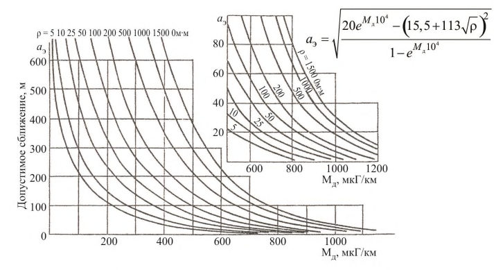

СП 98.13330.2018 «Трамвайные и троллейбусные линии»
О документе: разработчики, утверждение, регистрация, ключевые слова
СВОД ПРАВИЛ
Издание официальное
Москва 2018
- 1 ИСПОЛНИТЕЛИ - АО «НИЦ «Строительство», ООО «НТЦ НИИ ГЭТ», ГУП «МОСГОРТРАНС», ОООР «ГЭТ»
- 2 ВНЕСЕН Техническим комитетом по стандартизации ТК 465 «Строительство»
- 3 ПОДГОТОВЛЕН к утверждению Департаментом градостроительной деятельности и архитектуры Министерства строительства и жилищнокоммунального хозяйства Российской Федерации (Минстрой России)
- 4 УТВЕРЖДЕН приказом Министерства строительства и жилищнокоммунального хозяйства Российской Федерации от 20 ноября 2018 г. № 735/пр и введен в действие с 21 мая 2019 г.
- 5 ЗАРЕГИСТРИРОВАН Федеральным агентством по техническому регулированию и метрологии (Росстандарт). Пересмотр СП 98.13330.2012 «СНиП 2.05.09-90 Трамвайные и троллейбусные линии»
В случае пересмотра (замены) или отмены настоящего свода правил соответствующее уведомление будет опубликовано в установленном порядке. Соответствующая информация, уведомление и тексты размещаются также в информационной системе общего пользования - на официальном сайте разработчика (Минстрой России) в сети Интернет
© Минстрой России, 2018
Настоящий нормативный документ не может быть полностью или частично воспроизведен, тиражирован и распространен в качестве официального издания на территории Российской Федерации без разрешения Минстроя России
Дата введения - 2019-05-21
УДК 656.022
ОКС 93.100
Ключевые слова: трамвайные пути, троллейбусные линии, контактные сети, электроснабжение, электротяговые подстанции, депо, ремонтные мастерские, стоянки, проектирование, реконструкция, модернизация
ИСПОЛНИТЕЛЬ
| АО «НИЦ «Строительство» | ||
|---|---|---|
| Руководитель разработки | Генеральный директор | А.В.Кузьмин |
| СОИСПОЛНИТЕЛЬ ООО «НТЦ НИИ ГЭТ» | ||
| Руководитель разработки | Генеральный директор | О.В.Григорьева |
| Исполнитель | Ведущий инженер | О.А.Кропоткин |
Введение
Настоящий свод правил разработан с учетом требований Федерального закона от 27 декабря 2002 г. № 184-ФЗ «О техническом регулировании», Федерального закона от 30 декабря 2009 г. № 384-ФЗ «Технический регламент о безопасности зданий и сооружений», Федерального закона от 23 ноября 2009 г. № 261-ФЗ «Об энергосбережении и повышении энергетической эффективности и о внесении изменений в отдельные законодательные акты Российской Федерации».
Свод правил разработан ООО «НТЦ НИИ ГЭТ» (руководитель работы О.В. Григорьева ) при участии специалистов ГУП «МОСГОРТРАНС» и ОООР «ГЭТ».
1Область применения
Настоящий свод правил распространяется на проектирование вновь строящихся и реконструируемых транспортных сооружений, располагаемых в населенных пунктах: трамвайных линий (с шириной рельсовой колеи на прямых участках 1524 мм) обычных, скоростных, грузовых и служебных, а также располагаемых на территории депо и ремонтных мастерских (заводов); троллейбусных линий; зданий и сооружений для хранения, ремонта и обслуживания подвижного состава электрифицированного транспорта.
2Нормативные ссылки
В настоящем своде правил использованы нормативные ссылки на следующие документы:
ГОСТ 9.602-2016 Единая система защиты от коррозии и старения. Сооружения подземные. Общие требования к защите от коррозии
ГОСТ 12.1.036-81 Система стандартов безопасности труда. Шум. Допустимые уровни в жилых и общественных зданиях
ГОСТ 12.1.038-82 Система стандартов безопасности труда. Электробезопасность. Предельно допустимые значения напряжений прикосновения и токов
ГОСТ 67-78 Пересечения линий связи и проводного вещания с контактными сетями наземного электротранспорта. Общие требования и нормы
ГОСТ 78-2004 Шпалы деревянные для железных дорог широкой колеи. Технические условия
ГОСТ 839-80 Провода неизолированные для воздушных линий электропередачи. Технические условия
ГОСТ 2585-81 Выключатели автоматические быстродействующие постоянного тока. Общие технические условия
ГОСТ 3062-80 Канат одинарной свивки типа ЛК-0 конструкции 1 7 (1+6). Сортамент
Tram and trolleybus lines
ГОСТ 3064-80 Канат одинарной свивки типа ТК конструкции 1 37 (1+6+12+18). Сортамент
ГОСТ 4775-91 Провода неизолированные биметаллические сталемедные. Технические условия
ГОСТ 7392-2014 Щебень из плотных горных пород для балластного слоя железнодорожного пути. Технические условия
ГОСТ 7394-85 Балласт гравийный и гравийно-песчаный для железнодорожного пути. Технические условия
ГОСТ 8736-2014 Песок для строительных работ. Технические условия
ГОСТ 14202-69 Трубопроводы промышленных предприятий.
Опознавательная окраска, предупреждающие знаки и маркировочные щитки
ГОСТ 21174-75 Шпалы железобетонные предварительно напряженные для трамвайных путей широкой колеи
ГОСТ 22133-86 Покрытия лакокрасочные металлорежущего, кузнечнопрессового, литейного и деревообрабатывающего оборудования. Общие требования
ГОСТ 23476-79 Арматура контактной сети трамвая и троллейбуса. Общие технические условия
ГОСТ 28041-89 Пересечения, изоляторы секционные, стрелки контактных сетей трамвая и троллейбуса. Общие технические требования
ГОСТ 33320-2015 Шпалы железобетонные для железных дорог. Общие технические условия
ГОСТ Р 52289-2004 Технические средства организации дорожного движения. Правила применения дорожных знаков, разметки, светофоров, дорожных ограждений и направляющих устройств
ГОСТ Р 55647-2013 Провода контактные из меди и ее сплавов для электрифицированных железных дорог. Технические условия
СП 16.13330.2017 «СНиП II-23-81* Стальные конструкции»
СП 18.13330.2011 «СНиП II-89-80* Генеральные планы промышленных предприятий» (с изменением № 1)
СП 29.13330.2011 «СНиП 2.03.13-88 Полы» (с изменением № 1)
СП 30.13330.2016 «СНиП 2.04.01-85* Внутренний водопровод и канализация зданий»
СП 31.13330.2012 «СНиП 2.04.02-84* Водоснабжение. Наружные сети и сооружения» (с изменениями № 1, № 2)
СП 32.13330.2012 «СНиП 2.04.03-85 Канализация. Наружные сети и сооружения» (с изменением № 1)
СП 34.13330.2012 «СНиП 2.05.02-85* Автомобильные дороги» (с изменением № 1)
- СП 35.13330.2011 «СНиП 2.05.03-84* Мосты и трубы» (с изменением № 1)
- СП 42.13330.2016 «СНиП 2.07.01-89* Градостроительство. Планировка и застройка городских и сельских поселений»
- СП 43.13330.2012 «СНиП 2.09.03-85 Сооружения промышленных предприятий» (с изменением № 1)
- СП 44.13330.2011 «СНиП 2.09.04-87* Административные и бытовые здания» (с изменением № 1)
- СП 51.13330.2011 «СНиП 23-03-2003 Защита от шума» (с изменением № 1)
- СП 52.13330.2016 «СНиП 23-05-95* Естественное и искусственное освещение»
- СП 56.13330.2011 «СНиП 31-03-2001 Производственные здания» (с изменением № 1)
- СП 60.13330.2016 «СНиП 41-01-2003 Отопление, вентиляция и кондиционирование воздуха»
- СП 63.13330.2012 «СНиП 52-01-2003 Бетонные и железобетонные конструкции. Основные положения» (с изменениями № 1, № 2, № 3)
СП 119.13330.2017 «СНиП 32-01-95 Железные дороги колеи 1520 мм»
- СН 2.2.4/2.1.8.566-96 Производственная вибрация, вибрация в помещениях жилых и общественных зданий
Примечание - При пользовании настоящим сводом правил целесообразно проверить действие ссылочных документов в информационной системе общего пользования -на официальном сайте федерального органа исполнительной власти в сфере стандартизации в сети Интернет или по ежегодному информационному указателю «Национальные стандарты», который опубликован по состоянию на 1 января текущего года, и по выпускам ежемесячного информационного указателя «Национальные стандарты» за текущий год. Если заменен ссылочный документ, на который дана недатированная ссылка, то рекомендуется использовать действующую версию этого документа с учетом всех внесенных в данную версию изменений. Если заменен ссылочный документ, на который дана датированная ссылка, то рекомендуется использовать версию этого документа с указанным выше годом утверждения (принятия). Если после утверждения настоящего свода правил в ссылочный документ, на который дана датированная ссылка, внесено изменение, затрагивающее положение, на которое дана ссылка, то это положение рекомендуется применять без учета данного изменения. Если ссылочный документ отменен без замены, то положение, в котором дана ссылка на него, рекомендуется применять в части, не затрагивающей эту ссылку. Сведения о действии сводов правил целесообразно проверить в Федеральном информационном фонде стандартов.
3Термины и определения
В настоящем своде правил применены следующие термины с соответствующими определениями:
- 3.1аварийный режим электроснабжения
- Режим работы системы электроснабжения, при котором в результате отказа (или сочетания отказов) элементов системы соблюдение технических нормативов становится невозможным. Наступление аварийного режима требует сокращения или полного прекращения движения.
- 3.2верхнее строение трамвайного пути
- Рельсы, контррельсы, стыковые и промежуточные скрепления, противоугоны, путевые и междупутные тяги, температурные компенсаторы (уравнительные приборы), подрельсовые основания - шпалы, брусья, рамы, лежни, балласт, а также спецчасти - стрелочные переводы и глухие пересечения; кроме того, на совмещенном и обособленном полотне - дорожное покрытие пути, а на мостах, путепроводах, эстакадах и насыпях - охранные рельсы и брусья.
- 3.3вынужденный режим электроснабжения
- Режим работы системы электроснабжения, связанный с отключением одного из резервируемых элементов: питающей линии, преобразователя или источника питания собственных нужд. В вынужденном режиме нормальная работа подвижного состава, расчетные значения размеров и скорости движения сохраняются за счет использования резервов; электрические нагрузки и падения напряжения не должны превышать допустимых значений.
- 3.4гибкие поперечины
- Гибкие конструкции, к которым подвешены контактные подвески и другие элементы контактной сети.
- 3.5держатель кривой
- Устройство, служащее для фиксирования контактных проводов троллейбусной линии на кривой, обеспечивающее плавный проход головки токоприемника в месте излома контактного провода.
- 3.6децентрализованная система электроснабжения
- Система, в которой каждая секция контактной сети в нормальном режиме питается от двух соседних тяговых подстанций, полностью взаимно резервируемых по проводам контактной сети без производства переключений в контактной сети.
- 3.7длина сближения
- Протяженность контактной сети городского электрического транспорта (ГЭТ) в пределах зоны влияния.
- 3.8допустимое сближение
- Ширина сближения, при которой максимальный индуктированный ток (в конце зоны сближения) в режиме однофазного короткого замыкания влияющей линии не превышает безопасного уровня.
- 3.9зона влияния
- Пространство, в котором контактная сеть ГЭТ находится в электромагнитном поле, создаваемом проводами ВЛ или контактной сетью железной дороги переменного тока, и приобретает вследствие этого индуктированные потенциалы, которые могут представлять опасность для людей и оборудования.
- 3.10индуктированный ток
- Ток, обусловленный индуктивным влиянием, который проходит через тело человека, стоящего на земле и прикасающегося к изолированному от земли корпусу подвижного состава ГЭТ, соединенного с подверженной влиянию контактной сетью.
- 3.11Интервальное регулирование движения поездов; ИРДП
- Система обеспечения максимальной или необходимой пропускной способности участка при поддержании безопасного интервала между поездами.
- 3.12компенсированная подвеска
- Контактная подвеска (простая или цепная), в которой натяжение проводов и продольных несущих тросов (в цепных подвесках) автоматически регулируется.
- 3.13контактная линия
- Участок контактной сети, относящийся к одному трамвайному или троллейбусному пути одного направления.
- 3.14контактная подвеска
- Система подвешивания контактного провода (проводов) к поддерживающим устройствам.
- 3.15контактная сеть
- Совокупность устройств (опорные устройства, поддерживающие устройства, контактные подвески, специальные части, арматура), служащих для подведения электроэнергии непосредственно к токоприемнику подвижного состава.
- 3.16косое сближение
- Такое расположение влияющего и подверженного влиянию проводов, при котором их проекции на горизонтальную плоскость в зоне влияния не параллельны.
- 3.17малогабаритная контактная подвеска
- Контактная подвеска (простая или цепная) с ограниченным расстоянием от точек подвешивания контактного провода до точек закрепления поддерживающего устройства. Предназначена для применения в условиях стесненных габаритов по высоте.
- 3.18некомпенсированная подвеска
- Контактная подвеска (простая или цепная), в которой натяжение проводов и продольных несущих тросов (в цепных подвесках) автоматически не регулируется.
- 3.19несущая поперечина
- Гибкое поддерживающее устройство из троса, на который закреплена контактная подвеска спецчасти и устройства контактной сети, воспринимающее в основном усилия от массы подвески, спецчастей, устройств и усилия от фиксаторов.
- 3.20нормальный режим электроснабжения
- Режим работы систем электроснабжения без использования резервов, обеспечивающий питание контактной сети при расчетных размерах движения в часы максимума и для условий наибольшего сопротивления движению подвижного состава при требуемых технических и наивысших экономических показателях транспортной системы.
- 3.21обратный фиксатор
- Фиксирующее устройство, состоящее из стойки и закрепленного на ней фиксатора или оттяжки, воспринимающее нагрузку от излома контактного провода в горизонтальной плоскости.
- 3.22обособленное трамвайное полотно
- Трамвайные пути, расположенные в профиле улично-дорожной сети, не предназначенные для движения безрельсового транспорта.
- 3.23опоры (стойки)
- Специальные, отдельно стоящие конструкции для закрепления поддерживающих устройств контактной сети, питающих и усиливающих линий, сетей другого назначения.
- 3.24опорные устройства
- Устройства (конструкции), на которых закрепляются поддерживающие устройства контактной сети, питающих и усиливающих линий.
- 3.25оттяжка
- Фиксирующее устройство из троса или проволоки, воспринимающее растягивающее усилие от излома контактного провода в горизонтальной плоскости.
- 3.26параллельное сближение
- Такое расположение влияющего и подверженного влиянию проводов, при котором их проекции на горизонтальную плоскость в зоне влияния параллельны.
- 3.27питающие линии
- Воздушные провода или кабельные линии, электрически соединяющие шины тяговых подстанций с контактными проводами и рельсами.
- 3.28поддерживающие устройства
- Гибкие или жесткие конструкции (тросовые и проволочные поперечины, кронштейны), к которым подвешиваются контактные подвески, спецчасти и другие элементы контактной сети.
- 3.29полукомпенсированная подвеска
- Цепная контактная подвеска, в которой автоматически регулируется натяжение только контактного провода.
- 3.30простая гибкая поперечина
- Гибкое поддерживающее устройство из троса или проволоки, на которое непосредственно закреплен контактный провод, воспринимающее нагрузку от массы подвески и излома контактного провода в горизонтальной плоскости.
- 3.31простая контактная подвеска
- Контактная подвеска, в которой контактный провод подвешивают непосредственно к поддерживающему устройству при помощи подвесной арматуры и струн. Разновидности простой подвески: по конструкции подвешивающих устройств - на гибких поперечинах, на кронштейнах, на потолочных подвесках (жесткая); по конструкции струн - на наклонных струнах, петлевая.
- 3.32продольная электродвижущая сила (продольная ЭДС)
- Разность потенциалов, индуктированных на концах подверженного влиянию провода при магнитном влиянии.
- 3.33расчетная скорость сообщения на участке линии
- Скорость движения экипажей общественного транспорта с учетом расчетных затрат времени на движение по участку. Рассчитывается как частное от деления расстояния движения трамвая между границами участка на суммарное планируемое время безопасного движения вагона с учетом плана и профиля линии, необходимого запаса времени на посадку и высадку пассажиров на остановочных пунктах, планируемого ожидания на светофорных пересечениях, технических остановок, замедления на участках с ограничением скорости и других факторов, которыми должен руководствоваться водитель при выборе максимально возможной скорости движения по участку. Суммарное время ожидания должно быть рассчитано с учетом вероятностного характера времени ожидания и посадки исходя из необходимости прохождения участка экипажем за отведенное время как минимум в 85 % случаев движения в заданный период суток.
- 3.34самостоятельное трамвайное полотно
- Трамвайные пути, расположенные вне улично-дорожной сети.
- 3.35серверная
- Выделенное технологическое помещение со специально созданными и поддерживаемыми условиями для размещения и функционирования серверного и телекоммуникационного оборудования.
- 3.36скоростная трамвайная линия
- Участок трамвайной линии протяженностью не менее 2 км, на котором достигается расчетная скорость сообщения в часы пик 21 км/ч и более.
- 3.37совмещенное трамвайное полотно
- Трамвайные пути, расположенные в профиле улично-дорожной сети на одном уровне с проезжей частью, по которым разрешено движение безрельсовых транспортных средств.
- 3.38специальные части контактной сети
- Сложные конструкции заводского изготовления: стрелочные узлы троллейбусных линий, пересечения троллейбусных контактных линий, пересечения троллейбусных контактных линий с трамвайными контактными линиями.
- 3.39тяговая сеть
- Совокупность устройств (питающие линии, рельсовая сеть, контактная сеть, усиливающие линии), служащих для передачи электрической энергии от тяговой подстанции к подвижному составу.
- 3.40уровень головки рельса; УГР
- Уровень отсчета вертикальных размеров габаритов подвижного состава и приближения строений. Уровень головки рельса определяется как горизонтальная плоскость, касательная к верху головки рельса.
- 3.41усиливающие провода
- Воздушные провода или кабельные линии, проложенные вдоль контактных линий, служащие для увеличения электрической проводимости контактной сети.
- 3.42фиксатор
- Устройство, предназначенное для фиксации положения контактного провода в плане, воспринимающее усилие от излома контактного провода в горизонтальной плоскости.
- 3.43фиксирующая поперечина
- Составная часть цепной гибкой поперечины, выполненная из троса или проволоки, воспринимающая горизонтальные нагрузки от фиксации положения контактного провода.
- 3.44централизованная система электроснабжения
- Система, в которой каждая тяговая подстанция осуществляет автономное питание тяговой сети без автоматической разгрузки соседними подстанциями.
- 3.45цепная гибкая поперечина
- Гибкое поддерживающее устройство, состоящее из несущей и фиксирующей поперечины.
- 3.46цепная контактная подвеска
- Контактная подвеска, в которой контактный провод подвешен к продольному несущему тросу, закрепленному к поддерживающему устройству.
- 3.47частично компенсированная подвеска
- Контактная подвеска, в которой удлинение контактного провода при изменении температуры компенсируется частично.
- 3.48челночный подвижной состав
- Подвижной состав трамвая, оборудованный двумя кабинами управления для обеспечения возможности оборота без использования разворотных колец.
- 3.49ширина сближения
- Расстояние между проекциями на горизонтальную плоскость влияющего провода и подверженного влиянию провода в зоне влияния.
- 3.50эквивалентная ширина сближения
- Ширина параллельного сближения, при котором в рассматриваемой цепи наводят такую же по величине продольную ЭДС, что и при данном косом сближении.
4Общие положения
- трамвайных линий с шириной рельсовой колеи на прямых участках 1524 мм;
- троллейбусных линий;
- контактных сетей трамвайных и троллейбусных линий. Примечание - Допускается проектировать участки путей с шириной рельсовой колеи на прямых участках 1520 мм при соблюдении условий, изложенных в примечании 1 к таблице 7.
Наименьший допустимый интервал во времени между поездами (одиночными вагонами) трамвая надлежит определять расчетом. На стадии разработки комплексных транспортных схем этот интервал можно принимать равным 45 с.
При проектировании сплетений и однопутных участков трамвайных линий с двухсторонним движением поездов трамвая необходимо предусмотреть мероприятия, обеспечивающие безопасность движения трамвая и безрельсового транспорта.
- на самостоятельном полотне;
- в профиле улично-дорожной сети на обособленном полотне;
- в профиле улично-дорожной сети на совмещенном полотне.
При расположении линии трамвая в профиле улично-дорожной сети допускаются любые комбинации взаимного размещения проезжих частей и трамвайных путей каждого из направлений. Как правило, трамвайные пути следует размещать на обособленном полотне, по оси улицы в разделительной полосе либо в иной конфигурации (по одной или обеим сторонам улицы, с использованием дублеров и т. п.).
Обособленное трамвайное полотно следует отделять от проезжих частей улиц, тротуаров и велосипедных дорожек разделительными полосами и техническими средствами организации дорожного движения, запрещающими доступ безрельсового транспорта.
При невозможности размещения линии на обособленном или самостоятельном полотне допускается размещение на совмещенном полотне.
При расположении линии на совмещенном полотне следует предусматривать мероприятия по организации дорожного движения, препятствующие созданию заторов, парковке транспортных средств на трамвайных путях и иным возможным причинам задержки движения трамвая.
Для отдельных участков пути при соответствующем техникоэкономическом обосновании допускается проектировать тоннели или эстакады.
При проектировании пешеходных пересечений трамвайной линии следует предусматривать мероприятия, обеспечивающие безопасные условия перехода пешеходами трамвайной линии, в том числе надлежащие условия видимости, предупреждающую сигнализацию и другие меры.
5Трамвайные пути и их обустройство Габариты
- между трамвайным вагоном и опорой контактной сети, расположенной в междупутье, - не менее 275 мм;
- между опор контактной сети в междупутье или трамвайным вагоном и экипажем другого вида транспорта как на прямых, так и на кривых участках пути - не менее 550 мм.
В начале и конце кривых участков пути и в трамвайных узлах величину зазора безопасности допускается уменьшать до 275 мм на протяжении не более 20 м.
В стесненных условиях существующей застройки на кривых участках пути, где невозможно в проекте обеспечить указанные зазоры безопасности между встречными трамвайными вагонами (негабаритные кривые), необходимо в проекте предусматривать мероприятия по организации движения, согласованные с эксплуатационным предприятием трамвая, обеспечивающие безопасность встречного разъезда поездов трамвая.
- при боковом размещении опор контактной сети - 3200;
- при установке опор контактной сети в междупутье - 3700.
Если опоры контактной сети имеют ширину 350 мм и менее, допускается уменьшить ширину междупутья до 3550 мм.
Допускается, в виде исключения, принимать ширину междупутья 3148 мм при соответствующем обосновании.
При строительстве трамвайных путей с применением путеукладочных механизмов железнодорожного типа ширину междупутья можно увеличивать до 4100 мм.
Расстояние между осями смежных путей, разделенных пожарным проездом, должно быть не менее 8000 мм.
Расстояния между осями смежных путей на кривых участках трамвайной линии для четырехосного подвижного состава трамвая следует принимать не менее значений, указанных в таблице 1.
Для вагонов с числом осей выше четырех расстояние между осями смежных путей на кривых участках надлежит определять в проекте в зависимости от конструктивных особенностей подвижного состава расчетного типа.
Расстояние между осями смежных путей на кривых участках линий скоростного трамвая (при исходном расстоянии между осями на прямых участках, равном 3200 мм) следует принимать, мм: при радиусах кривых от 100 до 300 м - 3500;
Таблица 1
СП 98.13330.2018
| Радиус кривой, м | Расстояние, мм, между осями смежных путей на кривых участках трамвайной линии, в середине кривой, при исходных расстояниях между осями на прямых участках, мм | Расстояние, мм, между осями смежных путей на кривых участках трамвайной линии, в середине кривой, при исходных расстояниях между осями на прямых участках, мм |
|---|---|---|
| Радиус кривой, м | 3200 | 3700 |
| 20 | 4100 | 4100 |
| 25 | 3860 | 3860 |
| 30 | 3610 | 3710 |
| 40 | 3580 | 3700 |
| 50 | 3500 | 3700 |
| 60 | 3450 | 3700 |
| 75 | 3400 | 3700 |
| 100 | 3350 | 3700 |
| 150 | 3300 | 3700 |
| 300 | 3250 | 3700 |
| 1000 | 3200 | 3700 |
Переход от нормальных междупутных расстояний на прямых участках пути к увеличенным на кривых участках следует принимать в пределах переходных кривых за счет применения на внутреннем пути переходных кривых увеличенной длины по сравнению с длиной, принятой для наружного пути.
При отсутствии переходных кривых увеличение междупутных расстояний достигается путем применения на внутреннем пути круговых кривых большего радиуса, чем радиус основной кривой.
- до стен жилой части зданий - 20,0 (расстояние до стен жилой части зданий может быть уменьшено при обеспечении выполнения требований п. 4.8 настоящего свода правил и разработке необходимых мероприятий, но не менее, чем до 2,8 м.);
- стен иных зданий - 2,8;
- стен тоннелей, подпорных стенок, опор мостов и путепроводов, перил мостов, ограждений мест производства работ (при запрещении доступа пешеходов между ними и подвижным составом и обеспечении путей эвакуации из подвижного состава) - 1,9;
- тротуаров, проезжей части (внешняя относительно оси пути грань бортового камня или бровка мощеного подзора) при отсутствии разделительной полосы или посадочной площадки:
- в нормальных условиях - 1,9;
- в стесненных условиях - 1,6;
- опор контактной сети, одиночных столбов - 1,6;
- опор освещения и контактной сети на территории депо и мастерских (заводов), расположенных вне междупутья - 1,9;
- одиночных стволов деревьев с диаметром кроны до 5 м:
- в нормальных условиях - 5,0; в стесненных - 3,0;
- кустарников высотой, м:
- стоек проемов въездных ворот на территорию и в здание депо - 1,9;
- края посадочной площадки - 1,4;
- шумозащитных экранов и других ограждений трамвайных линий (при
- запрещении доступа пешеходов) высотой, м:
- дорожных знаков, светофоров (на высоте более 2,5 м) - 1,9;
- навесов (козырьков) посадочных площадок, размещенных на высоте от уровня головки рельса, м:
свыше 5,85 м - допускается смыкание навесов (козырьков) над путями при условии обеспечения необходимой высоты подвешивания контактного провода;
- парапетов выходов из подземных пешеходных переходов или лестничных маршей надземных пешеходных переходов (при запрещении доступа пешеходов между ними и подвижным составом и обеспечении путей эвакуации из подвижного состава): на высоте до 0,7 м включительно - 1,5; на высоте свыше 0,7 м - 2,3;
- станционных сооружений трамвая: на перегонах - 2,3; конечных станциях - 4,4; напольных сооружений линий трамвая высотой не более 0,7 м - 1,5.
Минимальное вертикальное расстояние от УГР до низа строительных конструкций зданий и сооружений, расположенных над путями, должно обеспечивать высоту подвешивания контактного провода не менее 3,9 м.
Примечание - На кривых участках пути минимальные расстояния от оси пути до зданий, сооружений и устройств надлежит увеличивать на величину выноса или свеса вагона.
Для путей, расположенных на одном уровне с проезжей частью или на обособленном полотне, горизонтальные расстояния от оси пути до подземных коммуникаций необходимо принимать не менее, м:
- до водопровода, напорной и самотечной канализации (бытовой и дождевой), дренажей общей сети, кроме путевых, тепловых сетей (до наружной стенки канала), газопроводов с давлением до 0,294 МПа (3 кгс/см² ), силовых кабелей и кабелей связи, общих коллекторов - 2,8;
- до газопроводов высокого давления, св. 0,294 до 3,53 МПа (св. 3 до 12 кгс/см² ) - 3,8.
Допускается уменьшать расстояния от оси пути до силовых кабелей до 2 м при условии прокладки их в изолирующих блоках или трубах.
Пересечения подземных инженерных сетей с трамвайными путями следует выполнять под углом 90°.
5.7. Инженерные сети под трамвайными путями должны находиться в защитных изолирующих футлярах, трубах, кожухах, блоках на глубине не менее 1,2 м от головки рельса до верха конструкции при открытом способе производства работ, продавливании и горизонтальном бурении и не менее 3 м от головки рельса - при щитовой проходке. Концы защитных устройств на инженерных сетях должны быть выведены на расстояние не менее 2 м от крайних рельсов.
Пересечение трамвайных путей подземными инженерными сетями должно выполняться на расстоянии не менее 4 м от стрелок, крестовин и мест присоединения отсасывающих кабелей.
Пересечения трамвайных путей с линиями электропередачи и связи, газопроводами, водопроводами и другими наземными и подземными устройствами и сооружениями следует проектировать, соблюдая требования соответствующих нормативных документов по проектированию этих устройств и сооружений.
При реконструкции трамвайных путей допускается сохранение существующих инженерных сетей в полосе трамвайных путей. При этом необходимо предусматривать меры, уменьшающие вероятность нарушения движения трамвайных поездов в случае аварий или ремонта инженерных сетей (вынос горловины колодца и т. п.).
План и продольный профиль
Наименьшую величину радиусов кривых в плане следует принимать по таблице 2.
Таблица 2
| Наименьшие радиусы кривых в плане, м | Наименьшие радиусы кривых в плане, м | |
|---|---|---|
| Расположение путей | в нормальных условиях | допускаемые в стесненных условиях |
| На перегонах трамвайных линий | 50 | 20 |
| На разворотных кольцах, в узлах, на грузовых и служебных путях, а также на путях, расположенных на территории депо и ремонтных мастерских (заводов) | 25 | 20 |
При размещении трамвайных путей в пределах земляного полотна автомобильной дороги допускается применять радиусы кривых более 2000 м - в соответствии с радиусами кривых, принятыми для автомобильной дороги.
Увеличение радиуса свыше 2000 м допускается также при малых углах поворота для обеспечения минимально допустимой длины кривой. Длина круговой кривой, за исключением кривых в узлах, должна быть не менее 10 м.
Шаг изменения величины радиусов кривых в плане следует принимать, м:
| От 20 до 35 м | через 1 |
|---|---|
| » 35 » 100 м | » 5 |
| » 100 » 200 м | » 10 |
| » 200 » 1000 м | » 50 |
| Св. 1000 м | » 100 |
Примечание - Для узлов и стрелочных переводов допускается отступление от приведенных значений кратности радиусов.
При укладке одноостряковых стрелок при кривых, направленных в одну сторону, следует предусматривать прямую вставку длиной не менее 4 м.
Таблица 3
| Радиус круговой кривой, м | Наименьшие длины переходных кривых, м, для скоростных участков линий трамвая при скорости движения трамвайных поездов (вагонов), км/ч | Наименьшие длины переходных кривых, м, для скоростных участков линий трамвая при скорости движения трамвайных поездов (вагонов), км/ч | Наименьшие длины переходных кривых, м, для скоростных участков линий трамвая при скорости движения трамвайных поездов (вагонов), км/ч | Наименьшие длины переходных кривых, м, для скоростных участков линий трамвая при скорости движения трамвайных поездов (вагонов), км/ч | Наименьшие длины переходных кривых, м, для скоростных участков линий трамвая при скорости движения трамвайных поездов (вагонов), км/ч | Наименьшие длины переходных кривых, м, для скоростных участков линий трамвая при скорости движения трамвайных поездов (вагонов), км/ч | Наименьшие длины переходных кривых, м, для скоростных участков линий трамвая при скорости движения трамвайных поездов (вагонов), км/ч | Наименьшие длины переходных кривых, м, для скоростных участков линий трамвая при скорости движения трамвайных поездов (вагонов), км/ч |
|---|---|---|---|---|---|---|---|---|
| 80-76 | 75-71 | 70-66 | 65-61 | 60-56 | 55-51 | 50-46 | 45-41 | |
| 1000 | 40 | 30 | 30 | 25 | 20 | - | - | - |
| 800 | 50 | 40 | 35 | 30 | 25 | 20 | - | - |
| 600 | - | 50 | 45 | 40 | 30 | 25 | - | - |
| 500 | - | 60 | 55 | 45 | 35 | 30 | - | - |
| 400 | - | - | - | 50 | 45 | 35 | 30 | - |
| 350 | - | - | - | 50 | 50 | 40 | 30 | - |
| 300 | - | - | - | - | 50 | 45 | 35 | - |
| 250 | - | - | - | - | - | - | 40 | 35 |
| 200 | - | - | - | - | - | - | 50 | 40 |
Таблица 4
| Наименьшие длины переходных кривых, м, для обычных линий трамвая | Наименьшие длины переходных кривых, м, для обычных линий трамвая | Наименьшие длины переходных кривых, м, для обычных линий трамвая | Наименьшие длины переходных кривых, м, для обычных линий трамвая | |
|---|---|---|---|---|
| Радиус круговой кривой, м | На совмещенном полотне при скорости движения трамвайных поездов (вагонов), км/ч | На совмещенном полотне при скорости движения трамвайных поездов (вагонов), км/ч | На обособленном и самостоятельном полотне при скорости движения трамвайных поездов (вагонов), км/ч | На обособленном и самостоятельном полотне при скорости движения трамвайных поездов (вагонов), км/ч |
| 24-21 | 20-15 | 24-21 | 20-15 | |
| 100 | 9 | - | 18 | - |
| 75 | 9 | 8 | 18 | 14 |
| 50 | 9 | 8 | 18 | 14 |
| 30 | - | 8 | - | 14 |
| 20 | - | 7 | - | - |
Примечания
1 Для стесненных условий допускается принимать меньшие значения длин переходных кривых в пределах, указанных в таблицах 3 и 4, с соответствующим ограничением скорости движения.
2 На разворотных кольцах, в узлах, на путях, расположенных на территории депо и ремонтных мастерских (заводов), переходные кривые допускается не предусматривать.
При укладке нескольких стрелок при кривых, направленных в одну сторону, использование одноостряковых стрелок вне территорий депо не допускается.
- на подходах к мостам, путепроводам и эстакадам, на рамповых участках тоннелей - 60;
- в тоннелях - 40;
- на отстойных путях конечных пунктов, депо, ремонтных мастерских и заводов - 2,5;
- в стесненных условиях при устройстве улавливающего тупика - 30;
- на подъездных и выездных путях депо, ремонтных мастерских (заводов) - 30;
- на отстойных путях конечных пунктов, депо, ремонтных мастерских и заводов - 2,5; на остальных участках - 90.
Протяженность участков трамвайных путей не должна превышать, м:
- с уклонами:
- 30 ‰ - 700;
40 ‰ - 500;
- 50 ‰ - 350;
- 60 ‰ - 250.
При уклонах свыше 30 ‰ на участках, превышающих указанные длины, а также при уклонах свыше 60 ‰ при любой протяженности участка необходимо предусматривать специальные мероприятия по обеспечению безопасности движения, определяемые в проекте.
Применение продольных уклонов крутизной более 40 ‰ для кривых участков пути радиусом менее 100 м требует соответствующего обоснования и дополнительных мер безопасности.
где R -радиус кривой, м.
- В узлах допускается продольный профиль проектировать элементами меньшей длины.
Алгебраическая разность значений продольных уклонов двух смежных элементов пути не должна превышать 60 ‰.
Смежные прямолинейные элементы продольного профиля трамвайных путей, располагаемых на одном уровне с проезжей частью улиц или на обособленном полотне, следует сопрягать вертикальными кривыми, радиусы которых надлежит принимать в соответствии с СП 42.13330 в зависимости от алгебраической разности значений сопрягаемых уклонов.
Между вертикальными кривыми, направленными в разные стороны, следует предусматривать прямые вставки длиной не менее 10 м.
Между вертикальными кривыми, направленными в одну сторону, прямые вставки допускается не предусматривать.
В пределах стрелочных переводов и глухих пересечений переломы продольного профиля не допускаются.
В стесненных условиях стрелочные переводы и глухие пересечения допускается располагать в пределах вертикальной кривой радиусом не менее 2000 м.
При размещении кривых участков пути на пересечении улиц (дорог) головки наружного рельса внутренней кривой и внутреннего рельса наружной кривой допускается проектировать в одном уровне или с возвышением, соответствующим общему уклону поперечного профиля пересекаемой улицы (дороги).
Таблица 5
| Радиус кривой, м | Наибольшая допускаемая скорость, км/ч | Возвышение головки наружного рельса на скоростном участке, мм, при расчетной скорости, км/ч | Возвышение головки наружного рельса на скоростном участке, мм, при расчетной скорости, км/ч | Возвышение головки наружного рельса на скоростном участке, мм, при расчетной скорости, км/ч | Возвышение головки наружного рельса на скоростном участке, мм, при расчетной скорости, км/ч | Возвышение головки наружного рельса на скоростном участке, мм, при расчетной скорости, км/ч |
|---|---|---|---|---|---|---|
| 80 | 70 | 60 | 50 | 40 | ||
| 200 | 40 | н | н | н | н | 55 |
| 300 | 50 | н | н | н | 100 | 65 |
| 400 | 60 | н | н | 100 | 80 | 50 |
| 600 | 70 | н | 100 | 75 | 50 | 35 |
| 800 | 80 | 100 | 75 | 55 | 40 | 25 |
| 1000 | 80 | 90 | 60 | 45 | 30 | 20 |
| 1500 | 80 | 65 | 45 | 35 | 20 | 15 |
| 2000 | 80 | 40 | 30 | 25 | 15 | 10 |
| Примечание - «н» - не разрешается движение с данной скоростью. | Примечание - «н» - не разрешается движение с данной скоростью. | Примечание - «н» - не разрешается движение с данной скоростью. | Примечание - «н» - не разрешается движение с данной скоростью. | Примечание - «н» - не разрешается движение с данной скоростью. | Примечание - «н» - не разрешается движение с данной скоростью. | Примечание - «н» - не разрешается движение с данной скоростью. |
Таблица 6
| Радиус кривой, м | Возвышение головки наружного рельса для обычных линий трамвая, мм |
|---|---|
| До 100 включ. | 70 |
| Св. 100 до 200 включ. | 50 |
| » 200 » 500 » | 40 |
| » 500 » 1000 » | 30 |
Возвышение головки наружного рельса на кривых участках пути, расположенных на проезжей части улиц, на переездах и на площадках с дорожной одеждой капитальных типов, допускается уменьшать на 50 %.
Для трудных условий движения поездов (вагонов) величину возвышения головки наружного рельса следует принимать по таблице 7.
СП 98.13330.2018
| Радиус кривой, м | Возвышение наружного рельса, мм, в трудных условиях движения поездов (вагонов) при расположении путей | Возвышение наружного рельса, мм, в трудных условиях движения поездов (вагонов) при расположении путей |
|---|---|---|
| На одном уровне с проезжей частью | В обособленном или самостоятельном полотне | |
| До 50 включ. | 100 | 150 |
| Св. 50 до 100 включ. | 80 | 120 |
| » 100 » 250 » | 60 | 90 |
| » 250 » 500 » | 40 | 40 |
| » 500 » 1000 » | 30 | 30 |
К трудным условиям движения поездов (вагонов) относятся:
- спуски и подъемы с уклоном более 50 ‰ (любой протяженности);
- затяжные (длиной более 200 м) спуски и подъемы с уклонами более 35 ‰;
- кривые участки пути радиусом менее 78 м, располагаемые непосредственно за спуском с уклоном более 35 ‰.
Отвод возвышения наружного рельса следует предусматривать на протяжении переходной кривой, а при ее отсутствии - на прямом участке, примыкающем к круговой кривой. Уклон отвода возвышения наружного рельса должен быть не более 5 ‰.
Пересечения, примыкания, остановочные пункты и разъезды
Решение о строительстве пересечения автомобильных дорог и трамвайных линий в разных уровнях должно быть обосновано с учетом социально-экономического эффекта (затрат на строительство разноуровневого пересечения и экономического эффекта от строительства пересечения), при этом необходимо рассматривать варианты заглубления/приподнятия над уровнем земли как трамвайной линии, так и пересекаемой проезжей части.
Пересечения с магистральными дорогами 1-го класса скоростного непрерывного движения следует предусматривать в разных уровнях.
При проектировании пересечений трамвайных путей с пешеходными переходами следует учитывать их доступность для инвалидов и других групп населения с ограниченными возможностями передвижения.
Пересечения трамвайных путей с подъездными путями промышленных предприятий допускается предусматривать в одном уровне. При этом проект должен содержать меры по обеспечению безопасности движения, предусматривать соответствующую сигнализацию и ограждающие устройства.
При использовании неэлектрифицированных подъездных путей промышленных предприятий для служебного движения трамвайных вагонов [1], [2] по согласованию с владельцем подъездного пути в случае, если участок подъездного пути, по которому будут двигаться трамвайные вагоны, соответствует требованиям настоящего cвода правил. При этом должны быть предусмотрены меры, обеспечивающие безопасность движения, в том числе остановка железнодорожных локомотивов перед въездом на участок совместного движения трамвая и железнодорожного транспорта.
Пересечения трамвайных путей с электрифицированными подъездными путями допускаются только в случае, если система и оборудование электрификации подъездного пути в зоне пересечения с трамвайной линией (включая высоту подвески контактной сети, напряжение в сети и обустройство пересечения контактной сети) полностью соответствуют требованиям настоящего свода правил.
Между стыками рамных рельсов двух стрелочных переводов, направленных в разные стороны, следует предусматривать прямую вставку длиной не менее, м:
- в нормальных условиях - 10;
- в стесненных условиях - 6.
Расстояние между остановочными пунктами следует принимать, м:
- на застроенной территории - от 400 до 600; при необходимости повышения скорости сообщения:
- в пределах застроенной территории - от 500 до 1200;
- вне пределов застроенной территории - 1200 и более.
Расстояние между остановочными пунктами может быть снижено для распределения нагрузки между соседними пунктами, но не менее чем до 200 м.
Допускается размещение остановочных пунктов на мостах, путепроводах и эстакадах при условии недопущения одноуровневого перехода пассажиров трамвая через проезжую часть безрельсового транспорта.
В стесненных условиях допускается размещать остановочные пункты на внутренних участках кривых, а также на путях с продольным уклоном до 40 ‰.
Остановочные пункты должны проектироваться таким образом, чтобы обеспечивалась их доступность для инвалидов и других групп населения с ограниченными возможностями передвижения.
Посадочные площадки должны иметь твердое покрытие.
Длину посадочной площадки следует принимать на 5 м больше расчетной длины поезда (вагона). Ширину посадочной площадки следует определять в зависимости от расчетного числа пассажиров, но не менее 1,5 м.
Ширина посадочной площадки в тоннелях, а также при наличии лестничных входов в пешеходные переходы должна быть не менее 3 м.
Поперечный уклон посадочных площадок следует принимать равным 10 ‰ - 15 ‰ и направленным в сторону от пути.
Посадочные площадки должны проектироваться таким образом, чтобы обеспечивалась их доступность для инвалидов и других групп населения с ограниченными возможностями передвижения.
В периферийных районах и пригородных зонах городов на конечных станциях по согласованию с местными исполнительными органами власти допускается предусматривать площадки для конечных пунктов автобусов, стоянки легковых автомобилей, мотоциклов и велосипедов.
Посадку и высадку пассажиров на конечных пунктах (станциях) рекомендуется предусматривать раздельной - на самостоятельных площадках.
На конечных распорядительных пунктах трамвая кроме приемоотправочных и обгонных путей допускаются пути для мелкого ремонта, уборки и отстоя вагонов в резерве и на время обеденного перерыва поездной бригады и спецвагонов.
Целесообразность размещения на конечных распорядительных станциях служебных и санитарно-бытовых помещения для дежурных и поездных бригад, линейных рабочих, начальников маршрутов, комнаты путевых рабочих и помещения для хранения инструмента и материалов, а также помещения для организации горячего питания поездных бригад и линейного персонала определяется заданием на проектирование. Помещения для устройств сигнализации, централизации и блокировки (СЦБ), автоматики и связи следует предусматривать в соответствии с заданием на проектирование.
В стесненных условиях на конечных пунктах (станциях) линий трамвая раздельные площадки для посадки и высадки пассажиров допускается не предусматривать.
Помещение диспетчерской рекомендуется располагать не дальше 50 м от посадочных площадок.
Количество и длину путей следует определять расчетом исходя из количества маршрутов и подвижных единиц.
Полезную длину путей разъездов следует определять в зависимости от числа и типа трамвайных поездов (вагонов), одновременно принимаемых на разъездной путь, с учетом расстояния между поездами (вагонами), равного 2 м, и возможной стоянки путевых машин и спецвагонов.
На трамвайных линиях следует предусматривать места оборота (разворота) подвижного состава через каждые 5-8 км при использовании одностороннего подвижного состава и через каждые 2-3 км -при использовании челночного подвижного состава.
Земляное полотно и водоотвод
- в виде котлована - для путей с заглубленным балластным слоем, расположенных на улицах и площадях в одном уровне с проезжай частью или на обособленном полотне;
- в виде насыпей или выемок -для путей, расположенных на самостоятельном полотне с открытым балластным слоем.
На кривых участках двухпутных линий ширину котлована следует увеличивать на величину уширения междупутья.
- однопутных линий трамвая, расположенных:
- в одном уровне с проезжей частью улицы - 3,5;
- на обособленном полотне, отделенным от проезжей части бордюрным камнем - 3,8;
- то же, в стесненных условиях - 3,2;
- на обособленном полотне с односторонним ограждением пути - 4,7;
- на обособленном полотне с двухсторонним ограждением пути - 5,6;
- на обособленном полотне, с учетом размещения посадочной площадки минимальной ширины, без ограждений - 4,75;
- то же, в стесненных условиях - 4,45;
- на обособленном полотне, с учетом размещения посадочной площадки минимальной ширины с ограждением по одной из сторон - 5,15;
- на обособленном полотне, с учетом размещения посадочной площадки минимальной ширины с двухсторонним ограждением - 6,5; двухпутных линий трамвая при отсутствии опор контактной сети в междупутье, расположенных:
- в одном уровне с проезжей частью улицы - 7,0; на обособленном полотне, отделенным от проезжей части бордюрным камнем - 7,0;
- то же, в стесненных условиях - 6,4;
- на обособленном полотне с односторонним ограждением пути - 7,9;
- на обособленном полотне с двухсторонним ограждением пути - 8,8;
- на обособленном полотне, с учетом размещения посадочной площадки минимальной ширины в междупутье, без ограждений - 8,0;
- то же, в стесненных условиях - 7,4;
- на обособленном полотне, с учетом размещения посадочной площадки минимальной ширины вне междупутья в одном направлении, без внешних ограждений (с ограждением в междупутье) - 7,95;
- то же, в стесненных условиях - 7,65;
- на обособленном полотне, с учетом размещения посадочной площадки минимальной ширины вне междупутья в одном направлении с ограждением по одной из сторон - 8,85;
- на обособленном полотне, с учетом размещения посадочных площадок по обеим сторонам, без внешних ограждений (с ограждением в междупутье) 8,9;
- на обособленном полотне, с учетом размещения посадочных площадок по обеим сторонам и внешними ограждениями - 9,7.
Для двухпутных линий трамвая с размещением опор контактной сети в междупутье указанные выше расстояния должны быть увеличены на величину, м:
- при использовании опор шириной 350 мм и менее - 0,35;
- при использовании опор шириной свыше 350 мм - 0,5.
При размещении посадочной площадки (посадочных площадок) шириной, превышающей минимальную, ширину трамвайной линии в зоне остановок необходимо увеличивать на величину превышения ширины размещаемой посадочной площадки над минимальной шириной (1,5 м).
Ширину самостоятельного земляного полотна на прямых участках трамвайного пути следует принимать не менее указанной в таблице 8.
Поперечное очертание верха земляного полотна при использовании недренирующих грунтов надлежит проектировать в виде треугольника с основанием, равным ширине полотна, и скатами с уклонами 30 ‰ - 40 ‰, направленными в сторону водоотводных устройств. При использовании дренирующих грунтов верх земляного полотна следует проектировать горизонтальным.
Таблица 8
| Ширина самостоятельного земляного полотна на прямых участках пути, м, при использовании грунтов | Ширина самостоятельного земляного полотна на прямых участках пути, м, при использовании грунтов | |
|---|---|---|
| Вид земляного полотна | глинистых и недренирующих мелких и пылеватых песков | скальных крупнообломочных и дренирующих песчаных |
| Однопутное | 5,5 | 5,0 |
| Двухпутное при расстоянии между осями путей, мм: | ||
| 3200 | 8,8 | 8,2 |
| 3700 | 9,3 | 8,7 |
| 4100 | 9,7 | 9,1 |
Примечания
1 Ширину однопутного земляного полотна на кривых участках следует увеличивать с наружной стороны кривой: при радиусе 650 - 2000 м - на 0,1 м;
- » » 110 - 600 м - » 0,2 м;
- » » 100 м и менее - » 0,3 м.
2 Ширину двухпутных участков следует увеличивать на величину уширения междупутья.
Поперечный уклон дна котлована в недренирующих грунтах следует принимать равным 20 ‰ - 30 ‰ и направленным в сторону дренажа. В дренирующих грунтах дно корыта следует проектировать горизонтальным.
Выпуск воды из дренажных колодцев в городскую водосточную сеть следует предусматривать не реже чем через 200 м и в низких местах переломов продольного профиля посредством труб диаметром не менее 200 мм. Продольный уклон труб должен быть равен 20 ‰ - 50 ‰ (в стесненных условиях - не менее 10 ‰).
Отвод воды из путевых и стрелочных водоприемных коробок следует предусматривать посредством труб диаметром не менее 150 мм.
При отсутствии водосточной сети допускается выпуск воды в пониженные места рельефа, а также в водопоглощающие колодцы, при проектировании которых следует предусматривать защиту подземных вод от загрязнения.
Ширину бермы между подошвой откоса насыпи и бровкой водоотводной канавы следует принимать не менее 2 м.
При проектировании однопутной (в перспективе двухпутной) трамвайной линии водоотводные устройства необходимо располагать с учетом размещения земляного полотна второго пути.
Размеры поперечного сечения нагорных канав для трамвайных путей, расположенных на спланированных территориях, а также продольных и поперечных водоотводных канав следует определять по расходу воды с вероятностью превышения 10 %; нагорных канав для путей, расположенных на неспланированных территориях, - 5 %.
- на совмещенном полотне;
- на обособленном и самостоятельном полотне - в зоне переездов и пешеходных переходов.
Допускается обустройство дорожного покрытия на других участках обособленного и самостоятельного полотна при обосновании целесообразности.
Верхнее строение пути
Конструкция верхнего строения пути, включая технологические решения, должна удовлетворять требованиям надежного функционирования, регулярности и бесперебойности движения трамвайных вагонов.
Все элементы конструкции верхнего строения пути должны обеспечивать:
- безопасное движение трамвайных вагонов с установленной скоростью;
- стабильность размеров рельсовой колеи и пути в целом.
Конструкции верхнего строения пути должны обеспечивать ремонтопригодность.
Основание трамвайных путей следует выполнить с разделением слоев геотекстилем или иным способом, препятствующим взаимному проникновению фракций.
- назначение трамвайных путей;
- интенсивность и скорости движения поездов (вагонов);
- типы покрытий проезжей части улицы;
- требования благоустройства;
- гидрогеологические условия;
- план и продольный профиль пути;
- наличие местных строительных материалов;
- защиту подземных сооружений от коррозии и старения.
- трамвайные желобчатые;
- железнодорожные (безжелобчатые).
В кривых радиусом менее 400 м следует применять желобчатые рельсы или рельсы железнодорожного типа (безжелобчатые) с контррельсом.
Переход от нормальной ширины рельсовой колеи к увеличенной надлежит предусматривать на протяжении переходной кривой. При отсутствии переходной кривой уширение колеи производится на прямом участке, примыкающем к круговой кривой.
Отвод уширения колеи не должен превышать 1 мм на 1 м длины пути.
Таблица 9
| Участок пути | Ширина колеи, мм, при рельсах | Ширина колеи, мм, при рельсах |
|---|---|---|
| желобчатых | железнодорожного типа | |
| Прямой и кривой радиусом более 200 м | 1524 | 1524 |
| Кривой радиусом, м: | ||
| 76 - 200 | 1524 | 1524 |
| 26 - 75 | 1532 | 1532 |
| 21 - 25 | 1528 | 1532 |
| 20 и менее | 1526 | 1532 |
| В стрелочных переводах и глухих пересечениях | 1524 | 1524 |
Примечания
1 Ширина колеи 1520 мм допускается при рельсах железнодорожного типа на скоростных линиях трамвая, при условии применения соответствующих конструкций шпал и креплений.
2 В коротких кривых между спецчастями допускается ширина колеи 1524 мм.
5.45Трамвайный путь рекомендуется проектировать бесстыковым.
Параметры температурно-напряженного бесстыкового пути следует определять конструкцией верхнего строения пути на этапе предпроектных проработок.
На участках без дорожного покрытия, если конструкция пути не удовлетворяет требованиям бесстыкового пути, рекомендуется сваривать рельсы в плети длиной 300 - 400 м.
Плети должны разделяться температурными компенсаторами (уравнительными приборами).
Границы рельсовых плетей, укладываемых на мостах, путепроводах и эстакадах, должны назначаться с учетом расположения деформационных швов.
- на прямых и кривых участках радиусом более 200 м - через 2,6-2,4 м;
- на кривых участках радиусом от 75 до 200 м - через 2,4-2,0 м;
- на кривых участках радиусом менее 75 м - через 1,8-1,3 м.
При покрытии пути сборными железобетонными плитами допускается изменять расстояние между тягами, которое должно быть кратным размеру плит.
На путях с железобетонными шпалами установка тяг не обязательна.
Для путей, укладываемых на железобетонных шпалах, противоугоны возможно не устанавливать.
Число противоугонов следует определять расчетом или принимать по типовым схемам.
- на кривых участках пути (независимо от величины радиуса) на спуске с уклоном более 50 ‰;
- на кривых участках пути радиусом менее 200 м.
Охранный рельс необходимо располагать на расстоянии 215 мм в свету от наружного края крайнего ходового рельса.
Головку охранного рельса следует устанавливать с допуском ± 15 мм относительно головки ходового рельса.
Допускается при обосновании применение деревянных шпал.
Допускается предусматривать под балластным слоем сборные железобетонные конструкции или монолитные бетонные основания (полужесткие основания).
При расположении трамвайных путей на продольных уклонах более 60 ‰ при щебеночном балласте и более 40 ‰ при гравийном и песчаном балластах применение в основаниях пути сборных железобетонных и бетонных монолитных конструкций не допускается.
Допускается применение типовых железнодорожных конструкций верхнего строения пути, а также применение бесшпальных конструкций трамвайного пути.
Допускается применять железнодорожные железобетонные шпалы (ГОСТ 33320) в трамвайных путях без дорожного покрытия на щебеночном основании на прямых участках и кривых радиусом более 400 м, а также на кривых участках пути радиусом от 200 до 400 м при продольном уклоне менее 20 ‰.
- 5.53. Допускается применять деревянные шпалы, пропитанные антисептиками, не проводящими электрический ток и удовлетворяющие требованиям ГОСТ 78.
- 5.54. Число шпал на 1 км пути следует принимать: для путей трамвая на прямых участках и на кривых участках радиусом 1200 м и более - 1680, на кривых участках радиусом менее 1200 м - 1840; для путей грузовых, служебных, а также расположенных на территории депо и ремонтных мастерских (заводов) - 1440.
В пределах стрелочных переводов и пересечений число переводных брусьев (шпал) надлежит принимать по типовым эпюрам.
- 5.55. В качестве балласта следует предусматривать:
- щебень из естественного камня (ГОСТ 7392);
- щебень из валунов и гальки (ГОСТ 7392);
- гравий карьерный (ГОСТ 7394);
- песок (ГОСТ 8736).
Допускается применение щебня и иных материалов, удовлетворяющих требованиям национальных стандартов на балласт.
Таблица 10
| Толщина слоя балласта под шпалой на прямых участках пути, см, при использовании грунтов для возведения земляного полотна | Толщина слоя балласта под шпалой на прямых участках пути, см, при использовании грунтов для возведения земляного полотна | Толщина слоя балласта под шпалой на прямых участках пути, см, при использовании грунтов для возведения земляного полотна | |
|---|---|---|---|
| Пути | глинистых и недренирующих мелких и пылеватых песков | глинистых и недренирующих мелких и пылеватых песков | скальных, крупнообломочных и дренирующих песчаных |
| щебеночный балласт или смесь песчано- щебеночная из отсевов дробления серпентинитов | другие виды балласта | все виды балласта | |
| Трамвая: скоростного обычного Грузовые, также территории | 20 (10) 15 (10) | 30 25 15 | 20 15 |
| служебные, а расположенные на депо и ремонтных мастерских (заводов) | - | 15 |
Ширина плеча балластной призмы (от торца шпалы до бровки призмы) должна быть 25 см, а на кривых участках пути радиусом менее 600 м с наружной стороны - 35 см. Для бесстыкового пути ширину балластной призмы следует определять расчетом.
Верхняя поверхность балластной призмы для путей без дорожного покрытия должна быть на 3 см ниже верхней постели деревянных шпал и на одном уровне с верхом средней части железобетонных шпал.
Рекомендуется применение крестовин с проездом с опорой на бандаж.
Следует применять двухостряковые стрелки. Использование одноостряковых стрелок при строительстве новых линий допускается при обосновании.
Мосты, путепроводы, эстакады и тоннели
Тоннели для трамвайных линий следует проектировать в соответствии с нормами проектирования транспортных тоннелей, с учетом требований настоящих норм.
Крайние компенсаторы должны располагаться за пределами устоев моста на переходной плите не ближе 1,5-2,0 м от деформационного шва.
Промежуточные температурные компенсаторы следует сдвигать с деформационного шва на пролетные строения вперед по ходу движения.
Размеры посадочной части платформы следует принимать:
- длину - на 5 м более расчетной длины поезда, но не менее 60 м;
- ширину - по расчету в зависимости от ожидаемого пассажирооборота, но не менее 3 м;
- высоту над уровнем верха головки рельса - не более 30 см.
Станции и пересадочные сооружения между станциями на путях движения пассажиров при высоте подъема свыше 4 м и высоте спуска свыше 5 м следует оборудовать эскалаторами.
На подземных/эстакадных станциях следует предусматривать технические устройства или мероприятия по доставке маломобильных категорий граждан с поверхности на уровень пассажирской платформы (лифты или пандусы).
Обустройства пути
Наименьшая высота ограждения - 0,7 м.
Ограждения следует устанавливать на участках повышенной опасности для пешеходов, а также в междупутье на остановочных пунктах.
Тип и конструкция ограждений должна определяться проектом.
Допускается высадка кустарников в качестве ограждений.
Норма освещения трамвайных путей, расположенных на проезжей части улицы, должна приниматься по норме освещенности улицы.
Необходимо предусматривать освещение в зонах посадочных платформ, остановок, переездов, стрелочных переводов, пешеходных переходов, перекрестков и других мест, где это требуется по условиям безопасности движения.
Нормы освещенности следует принимать в соответствии с СП 52.13330.
На перегонах, вне застроенных территорий, освещение допускается не предусматривать.
Сигнализация, централизация и блокировка
В тоннельных участках следует предусматривать установку светофоров типа «метро».
Сигнальные устройства должны быть электрифицированы или освещены. Показания их должны быть видимы с приближающегося трамвайного поезда на расстоянии не менее расчетного тормозного пути при полном служебном торможении с максимальной скорости движения, установленной для данной линии. Сигнальные устройства следует окрашивать люминесцентной краской.
При установке на одном участке (узле, пересечении) трамвайных путей нескольких сигналов схема их включения должна обеспечивать взаимную увязку сигнальных показаний и автоматическую блокировку, не допускающих движение трамвайных поездов в противоположных направлениях.
С поста централизованного управления стрелками должна обеспечиваться видимость номеров маршрутов приближающихся трамвайных поездов и всего узла трамвайных путей. В постах централизованного управления стрелками, расположенных вне зоны видимости путей (на территории трамвайных депо, ремонтных заводов и мастерских), следует предусматривать световое сигнальное табло, обеспечивающее пульт оператора контрольной сигнализацией о положении перьев стрелки и свободности (занятости) блокируемых стрелочных участков.
Путевые устройства системы ИРДП должны обеспечивать на перегонах линий передачу сигнальных команд с пути на трамвайный поезд о допустимой скорости движения поезда.
На первую очередь эксплуатации допускается применение резервной системы ИРДП (автоблокировка с путевыми светофорами) без оборудования трамвайных поездов устройствами АВС (АРС).
Длина блок-участка на перегоне должна быть не менее длины тормозного пути, определенной для данного места при полном служебном торможении и допустимой скорости, с учетом времени, необходимого для срабатывания устройств АВС и автостопа.
Величину допустимой скорости вступления на блок-участок следует определять значностью сигнализации системы ИРДП.
На пересечениях улиц и дорог местного значения размещение светофорной сигнализации следует определять на этапе проекта. При отсутствии светофорного регулирования приоритет движения трамвая следует обеспечивать знаками и разметкой.
Связь и сигнализация на линиях трамвая и троллейбуса
- телефонная связь диспетчера по движению;
- телефонная связь электродиспетчера;
- телефонная тоннельная связь тоннельных участков [3];
- телефонная перегонная связь;
- беспроводная связь диспетчера с передвижными восстановительными бригадами;
- беспроводная связь диспетчера с центральным диспетчером.
Линейные сооружения всех видов телефонной связи следует объединять в единую комплексную сеть.
- городскую телефонную связь;
- местную телефонную связь;
- диспетчерскую телефонную связь для диспетчера по выпуску, заместителей начальника депо по эксплуатации и ремонту, начальника депо;
- громкоговорящую связь с участками депо и территорией для диспетчера по выпуску;
- телевизионную связь с участками депо и территорией для диспетчера по выпуску и заместителя начальника депо по ремонту;
- городскую радиофикацию;
- электрочасификацию;
- пожарную сигнализацию.
Для автоматизированных систем, требующих применения проводных каналов связи, в проектах следует предусматривать некоммутируемые линии связи; для систем, требующих применения радиоканалов, - соответствующие радиосредства.
6Троллейбусные линии
Пересечения троллейбусных линий с неэлектрифицированными внутренними подъездными путями промышленных предприятий допускается располагать на одном уровне при соответствующем технико-экономическом обосновании. При этом в проекте следует предусматривать меры по обеспечению безопасности движения и соблюдать условия взаимной видимости, а также предусматривать соответствующую сигнализацию и ограждающие устройства. Угол пересечения троллейбусных линий должен быть не менее 45°.
Пересечения и взаимные сближения троллейбусных линий с линиями связи и радиотрансляционными линиями должны быть выполнены в соответствии с требованиями ГОСТ 67.
Пересечения и взаимные сближения контактных проводов троллейбуса с воздушными электрическими линиями до 1000 В и выше следует выполнять с учетом требований настоящего свода правил.
Размещение остановочных пунктов троллейбуса перед перекрестками допускается при наличии специальной полосы для их движения или при соответствующем обосновании.
Расстояние от площадки остановки подвижного состава до ближайшего наземного пешеходного перехода следует принимать 20-30 м, до ближайшего входа в подземный пешеходный переход - не менее 5 м.
Длину площадки остановки подвижного состава следует принимать в зависимости от числа одновременно стоящих транспортных средств из расчета 20 м на один троллейбус.
Остановочные пункты троллейбусных линий в северной строительноклиматической зоне должны быть, как правило, оборудованы крытыми павильонами для пассажиров, а в районах с умеренным и жарким климатом навесами.
Разворотные кольца необходимо проектировать с учетом обеспечения плавного подхода троллейбусов к местам посадки и высадки пассажиров или отстойному участку.
Ширина площадки или проезжей части улицы, необходимая для разворота троллейбусов на 180°, должна быть не менее 28 м.
На конечных пунктах следует предусматривать:
- здания и сооружения для обеспечения управления движением, служебные, складские и санитарно-бытовые помещения для отдыха и горячего питания водителей и обслуживающего персонала;
- площадки с покрытием для приема, отгона, отстоя, технического осмотра и линейного ремонта подвижного состава.
7Контактные сети трамвая и троллейбуса Контактные подвески
Преимущественное применение должны иметь компенсированные и полукомпенсированные подвески.
Сечение контактных проводов следует принимать в соответствии с электрическим расчетом.
Таблица 11
| Тип контактных подвесок | Напряжение в проводах при растяжении, Н/мм² (кгс/мм² ) | Напряжение в проводах при растяжении, Н/мм² (кгс/мм² ) | Напряжение в проводах при растяжении, Н/мм² (кгс/мм² ) | Напряжение в проводах при растяжении, Н/мм² (кгс/мм² ) | Натяжение в | Натяжение в | Натяжение в | Натяжение в | Натяжение в | Натяжение в | Натяжение в | Натяжение в | Натяжение в |
|---|---|---|---|---|---|---|---|---|---|---|---|---|---|
| в медных фасонных (МФ) и медных фасонных овального профиля (МФО) | в медных фасонных (МФ) и медных фасонных овального профиля (МФО) | в бронзовых фасонных (БрФ) и бронзовых овального профиля (БрФО) | в бронзовых фасонных (БрФ) и бронзовых овального профиля (БрФО) | сталеалюминиевых проводах ПКСА-80/180, Н (кгс) | сталеалюминиевых проводах ПКСА-80/180, Н (кгс) | сталеалюминиевых проводах ПКСА-80/180, Н (кгс) | сталеалюминиевых проводах ПКСА-80/180, Н (кгс) | сталеалюминиевых проводах ПКСА-80/180, Н (кгс) | сталеалюминиевых проводах ПКСА-80/180, Н (кгс) | сталеалюминиевых проводах ПКСА-80/180, Н (кгс) | сталеалюминиевых проводах ПКСА-80/180, Н (кгс) | сталеалюминиевых проводах ПКСА-80/180, Н (кгс) | |
| мини- | макси- | мини- | макси- | мини- | макси- | макси- | макси- | макси- | макси- | макси- | макси- | макси- | |
| мальное | мальное | ||||||||||||
| мальное | мальное | мальное | мальное | мальное | мальное | мальное | мальное | ||||||
| мальное | |||||||||||||
| мальное | мальное | мальное | мальное | мальное | мальное | мальное | мальное | ||||||
| мальное |
| Некомпенсиро- ванные | 45 (4,5) | 125 (12,5) | 55 (5,5) | 150 (15) | 2000 (200) | 12000 (1200) |
|---|---|---|---|---|---|---|
| Частично компенсирован- ные | 40 (4) | 150 (15) | 55 (5,5) | 150 (15) | 2000 (200) | 12000 (1200) |
| Полукомпенси- рованные и компенсирован- ные | 80 (8) | 95 (9,5) | 105 (10,5) | 115 (11,5) | 7000 (700) | 8000 (800) |
Примечание - При применении проводов овального профиля для троллейбуса следует учитывать форму профиля контактной вставки троллейбуса.
7.8Высоту подвешивания трамвайных и троллейбусных контактных проводов следует принимать по таблице 12.
Таблица 12
| Контактные сети | Высота подвешивания контактных проводов над уровнем головок рельсов или дорожного покрытия, м |
|---|---|
| 1 Вновь строящиеся или реконструируемые линии (пассажирские, служебные, на открытых территориях депо, ремонтных мастерских, заводов) | 5,8 |
| 2 Новые участки контактных проводов при совместном подвешивании на общих поддерживающих устройствах | Такая же, как существующей линии |
| 3 Участки контактных проводов: - внутри производственных помещений - в проемах ворот здания высота не должна быть меньше высоты подвижного состава с опущенными и надежно зафиксированными токоприемниками - под вновь строящимися и реконструируемыми | 5,2 4,7 |
| инженерными сооружениями и в помещениях закрытых стоянок | Не менее 4,4 |
| - под существующими инженерными сооружениями с габаритом по высоте менее 5,0 м (до реконструкции проезжей части дороги под сооружением) | То же 4,2 |
| - в тоннелях трамвая | » 3,9 |
Примечания
1 Для простых подвесок и цепных подвесок с двумя струнами в пролете высоту подвешивания контактных проводов следует принимать для среднегодовой температуры воздуха, а для цепных подвесок с числом струн в пролете более двух - для температуры расчетного беспровесного состояния контактных проводов.
- 2 При подвешивании на общих цепных гибких поперечинах допускается отклонение в высоте подвешивания контактных проводов в позиции 2 настоящей таблицы на разность конструктивных размеров подвесной арматуры.
- 3 Если применяемые в эксплуатации трамвайных и троллейбусных предприятий токоприемники при изменении высоты подвешивания контактного провода ухудшают свои характеристики, влияющие на качество токосъема, то высоту подвешиваемого контактного провода следует сохранять принятой для данного предприятия.
где R - радиус кривой по оси пути, м; b - отклонение (вынос) точки фиксации контактного провода в плане от оси токоприемника, м;
H - величина наибольшего натяжения контактного провода, Н (кгс);
Z - допустимое усилие в горизонтальной плоскости на подвесную или фиксирующую арматуру, Н (кгс).
При пересечении осей путей под углом менее 60° при направлении движения поездов обеих пересекающихся линий со стороны острого угла точку пересечения контактных проводов следует смещать навстречу движению на 10-15 см по биссектрисе угла, образованного контактными проводами.
При этом приближение контактных проводов к осевой линии должно начинаться на расстоянии 120-150 м до поворота при двух полосах движения, а при трех и более -100- 120 м.
Расстояние от крайнего контактного провода троллейбуса в плане до борта тротуара должно быть не менее 1,5 м, а на криволинейном участке в средней части хорды - 1 м.
В местах поворота на перекрестках, площадях, разворотных кольцах и т. п. наименьший радиус контактной линии в плане следует принимать по таблице 14.
При фиксации контактного провода с применением зажимов длиной менее 250 мм угол излома контактного провода не должен превышать 4° на один зажим.
Таблица 13
| Горизонтальные расстояния, м, от контактного провода троллейбусной линии до ближайшего | Горизонтальные расстояния, м, от контактного провода троллейбусной линии до ближайшего | Горизонтальные расстояния, м, от контактного провода троллейбусной линии до ближайшего | Горизонтальные расстояния, м, от контактного провода троллейбусной линии до ближайшего | |
|---|---|---|---|---|
| Троллейбусные линии | рельса трамвайной линии при движении | рельса трамвайной линии при движении | контактного провода смежной троллейбусной линии при движении | контактного провода смежной троллейбусной линии при движении |
| параллельном | встречном | параллельном | встречном | |
| В нормальных условиях | В нормальных условиях | В нормальных условиях | В нормальных условиях | В нормальных условиях |
| Пассажирские | 3,5 | 4,0 | 3,0 | 3,5 |
| Служебные и грузовые, а также расположенные на территории депо и ремонтных мастерских (заводов) | 2,5 | 3,0 | 2,0 | 3,0 |
| Допускаемые в стесненных условиях | Допускаемые в стесненных условиях | Допускаемые в стесненных условиях | Допускаемые в стесненных условиях | Допускаемые в стесненных условиях |
| Пассажирские | 2,0 | 2,5 | 1,5 | 2,0 |
| Служебные и грузовые | 1,5 | 2,0 | 1,0 | 1,5 |
| Расположенные на территории депо и ремонтных мастерских (заводов) | 1,5 | 2,0 | 1,0 | 1,0 |
Примечание - В пролете, примыкающем к стрелочному узлу троллейбусных контактных линий, горизонтальное расстояние между ближайшими контактными проводами смежных линий может быть уменьшено до 1,0 м (это требование не распространяется на зону длиной 10 м; у стрелочного узла, где расстояние между крайними проводами сливающихся (расходящихся) линий определяется конструкцией стрелочного узла).
Таблица 14
| Условия поворота | Наименьший радиус кривой в плане по внутреннему контактному проводу троллейбусных линий, м |
СП 98.13330.2018
| в нормальных условиях | допускаемый в стесненных условиях | |
|---|---|---|
| На пассажирских линиях при углах поворота: | ||
| до 90° | 12 | 10 |
| св. 90° | 14 | 11 |
| На служебных и грузовых линиях, а также на линиях депо и ремонтных мастерских (заводов) | 10 | 9 |
Наибольшую длину пролетов контактной подвески на прямых участках следует принимать по таблице 15.
Таблица 15
| Контактные подвески | Наибольшие величины пролетов контактных подвесок между опорами на прямых участках, м, для линий | Наибольшие величины пролетов контактных подвесок между опорами на прямых участках, м, для линий |
|---|---|---|
| трамвайных | троллейбусных | |
| Цепные | До 50 | До 50 |
| Простые петлевые | » 45 | » 40 |
| Простые на наклонных струнах | » 40 | » 40 |
| Простые на гибких тросовых поперечинах и кронштейнах | » 35 | » 30 |
| Цепные малогабаритные в тоннелях | » 25 | » 25 |
| Простые на эластичных поддерживающих устройствах в тоннелях | » 15 | » 15 |
В пределах вертикальных кривых, сопрягающих смежные элементы продольного профиля трамвайного пути или дороги, на участках трассы троллейбусной линии с горизонтальными кривыми радиусом менее 500 м и при использовании в качества опорных устройств стены зданий длины пролетов контактных подвесок следует уменьшать на 20 % - 25 %.
Величину отдельных (не смежных) пролетов цепных подвесок допускается увеличивать до 60 м.
Для перекрытия больших одиночных пролетов длиной до 100 м следует применять цепную подвеску с 3-4 струнами в пролете и анкеровкой продольных тросов по обеим сторонам пролета, а также простую подвеску на тросовых гибких поперечинах с использованием поддерживающих устройств типа «трапеция» или «полигон».
Поддерживающие и фиксирующие устройства
Конструкционное выполнение поддерживающих и фиксирующих устройств трамвайной контактной сети должно исключать удары токоприемников трамвая по частям контактной сети при усилии токоприемников на контактный провод силой не менее 150 Н (15 кгс) и минимальном натяжении тросовых элементов.
При расчете фиксирующих тросов минимально допустимое натяжение троса следует принимать равным 300-500 Н (30-50 кгс) в наиболее разгруженном звене при наивысшей годовой температуре в данном климатическом районе.
- для стальных несущих тросов цепных подвесок, стальных, биметаллических и медных несущих тросов, оттяжных ветвей на криволинейных участках - не менее 3;
- для медных и биметаллических продольных несущих тросов цепных подвесок, стальных и биметаллических фиксирующих поперечин - не менее 2,5.
- для простых поперечин на прямых участках - 1:10-1:12;
- для внешних, по отношению к кривой, частей простых поперечин 1:15-1:20;
- для внутренних, по отношению к кривой, частей простых поперечин 1:5-1:10;
- для несущих тросов цепных поперечин, поперечных несущих тросов цепных подвесок и несущих тросов спецчастей - 1:5-1:10;
- для оттяжек на кривых - 1:20-1:40:
- для анкеровочных ветвей контактного провода - 1:30-1:40.
В несущих тросах цепных подвесок расстояние между натяжными муфтами должно быть не более 600 м; натяжные муфты должны предусматриваться также в местах анкерования тросов.
На простых гибких поперечинах допускается предусматривать подвешивание не более двух контактных линий трамвая или троллейбуса при расстоянии между их проводами до 10 м. При большем расстоянии между проводами, а также при числе линий более двух следует применять цепные гибкие поперечины.
- в контактной сети трамвая - 0,5;
- » » » троллейбуса - 0,7.
В местах пересечения гибкими поперечинами смежных контактных проводов между последними и поперечинами должно обеспечиваться расстояние не менее 0,7 м.
Расчетная нагрузка на один стенной крюк в местах закрепления гибких поддерживающих устройств на стенах зданий не должна превышать 7000 Н (700 кгс).
Допускается использование поперечин контактной сети для прокладки вдоль этих поперечин проводов СЦБ и связи при условии выполнения двух ступеней изоляции проводов СЦБ и связи на напряжение 1 кВ от поддерживающих устройств контактной сети.
Опорные конструкции
Использование стен из навесных железобетонных панелей для крепления контактной сети к зданиям не допускается, за исключением случаев использования специальных закладных деталей, закрепленных к несущим элементам здания.
В узлах сопряжения анкерных участков с грузовыми компенсаторами в местах вывода питающих кабелей, на инженерных сооружениях (мостах, путепроводах и эстакадах), а также при установке опор контактной сети в зоне линий электропередачи напряжением 35 кВ и выше рекомендуется предусматривать стальные трубчатые опоры.
Необходимость применения соответствующей конструкции опор следует устанавливать и обосновывать проектом.
Заземления железобетонных и металлических опор контактной сети трамвая и троллейбуса не требуется предусматривать.
Расчетную горизонтальную нагрузку на стальные опоры Р , Н, кгс, следует определять по формуле
где K - коэффициент перегрузки, K = 1,3;
Р н - нормативная нагрузка на опору, приложенная к вершине опоры, Н, кгс.
Расчетный прогиб железобетонных и стальных опор под действием нормативной нагрузки не должен превышать 1 /70 высоты надземной части опоры.
При восприятии опорой нагрузок, направленных в разные стороны, опору следует выбирать по результирующей нагрузке, определяемой для наиболее невыгодного сочетания всех действующих нагрузок, с учетом возможности обрыва любого из закрепляемых на опоре тросов. При этом величина результирующей нагрузки, приведенной к вершине опоры, не должна быть больше нормативной нагрузки на опору.
- при необходимости дополнительной загрузки существующих опор;
- на грузовых и служебных линиях;
- на территориях депо и ремонтных мастерских (заводов);
- на загородных линиях.
Допускается предусматривать закрепление анкерных оттяжек опор к стенам зданий или к заглубленному в грунт анкеру.
Высота расположения анкерных оттяжек в местах, где возможно движение транспорта и пешеходов, должна приниматься не менее 5 м от уровня проезжей части, а при пересечении тротуара - не менее 3 м от уровня его покрытия.
Отдельные опоры можно размещать во дворах, у стен зданий, в зонах зеленых насаждений.
При установке опор вдоль дороги, не ограниченной бортовым камнем, их следует размещать на обочине на расстоянии не менее 1,75 м от края проезжей части (асфальтового покрытия) с устройством типового барьерного ограждения. Минимальные расстояния от оси пути трамвая до опор контактной сети следует принимать в соответствии с 5.2, 5.5.
При расчете фундаментов опор контактной сети трамвая и троллейбуса в качестве расчетной нагрузки следует принимать нормативную нагрузку на опору с коэффициентом перегрузки K = 1,3.
Глубина заложения подошвы фундамента не должна быть менее глубины промерзания грунта в соответствующем районе.
Железобетонные сборные фундаменты опор контактной сети должны быть защищены от электрической коррозии и коррозии, вызываемой воздействием окружающей среды.
Допускается, как исключение, установка опор контактной сети трамвая и троллейбуса над подземными сооружениями, коммуникациями при расстоянии от верха подземного сооружения до подошвы фундамента опоры не менее 0,5 м, а для сооружений метрополитена -1,0 м.
Возможно применение других конструкций фундаментов, обеспечивающих выполнение требований 7.39.
Опоры в стальных стаканах следует крепить с заглублением на 0,6-0,8 м и расклиниванием стальными клиньями по периметру в нижней и в верхней части стакана. В верхней части стакана допускается приварка опоры к стакану. Фланцевое крепление опоры следует выполнять болтами. От места крепления опоры должен быть обеспечен водоотвод. Конструкцию крепления опор к инженерному сооружению надлежит рассчитывать по расчетным нагрузкам, действующим на устанавливаемые опоры.
Подвесная арматура и специальные части контактной сети
Элементы спецчастей контактных сетей по ходовым линиям должны быть гладкими, без встречных уступов и задиров. Арматура контактной сети должна соответствовать ГОСТ 23476, а устройства и специальные части ГОСТ 28041.
Конструкция крепления пересечений трамвайных и троллейбусных линий должна обеспечивать пространственное положение пересечения в плоскости, параллельной плоскости трамвайного пути.
Излом контактного провода в горизонтальной плоскости на специальных частях конструкций не допускается.
На секционном изоляторе излом контактного провода допускается не более 4°.
Трассировка кривых линейных участков контактной сети троллейбуса должна осуществляться углами не более 25°. На разворотных кольцах, в депо и конечных станциях трассировка сети может проводиться углами, превышающими 25°.
Допускается установка специальных частей контактной сети с изолированными ходовыми элементами на следующих продольных уклонах трассы, ‰:
- пересечения троллейбусных линий - до 20;
- » трамвайной и троллейбусной линии - 25;
- стрелочные узлы управляемые - 25;
- » » сходные - 30;
- секционные изоляторы - 40.
В исключительных случаях при отсутствии гололедных образований и при соответствующем обосновании допускается увеличение уклонов на 5 ‰ .
При расстоянии между пересечениями 5 м следует применять пересечения, обеспечивающие движение под током.
- автоматических стрелок - за 60-80 м до поворота при двух полосах движения, а при трех и более - за 120-150 м. После остановочного пункта, пешеходного перехода, секционного изолятора по ходу движения троллейбусов - на расстоянии одного пролета от 30 до 50 м;
- сходных стрелок - после перекрестка, пешеходного перехода на расстоянии не менее 8 м.
Отклонения от приоритетной установки допускаются в исключительно стесненных и обоснованных ситуациях.
Изоляция контактной сети
- к опорным конструкциям (опорам, зданиям, инженерным сооружениям);
- к токопроводящим элементам контактной подвески ближайших линий трамвая и троллейбуса;
- к проводам и оборудованию иного назначения.
Между разнополярными проводами одной троллейбусной линии (одна ступень изоляции) должны устанавливаться трекингстойкие изоляторы сопротивлением не менее 5 МОм, выдерживающие сухоразрядное испытательное напряжение частотой 50 Гц эффективным значением 5 кВ в течение 1 мин и мокроразрядное напряжение 3 кВ в течение 3 мин, при относительной влажности 95 % и температуре до плюс 20 °С.
- в местах крепления контактных проводов;
- в местах крепления поперечины к опорным конструкциям;
- на расстоянии не менее 1,5 м и не более 2,0 м от каждого контактного провода трамвая.
При расстоянии между контактными проводами трамвая менее 6 м изоляцию в поперечинах между этими проводами следует устанавливать посередине.
В контактной сети трамвая при использовании неизолированных подвесов допускается не предусматривать изоляцию в месте крепления контактного провода к поперечине.
- от контактных и усиливающих проводов;
- от специальных частей контактной сети;
- от несущих тросов цепных подвесок;
- от опорных конструкций.
Исключение составляют междупутные соединители контактной сети трамвая, где между электросоединителем и продольным несущим тросом цепной подвески, находящимся под напряжением, допускается одна ступень изоляции, а также между электросоединителем и контактным проводом простой подвески допускается непосредственное электрическое соединение.
При креплении струн к несущей поперечине, являющейся одновременно электрическим соединителем, в каждой из струн должны находиться по два изолятора.
- от опорных конструкций - 1,5;
- » » балконов зданий и оконных проемов - 2,0;
- от изолированных кронштейнов - 0,25;
- » стволов деревьев - 1,5;
- » ветвей - 1,0;
- от металлических частей инженерных сооружений:
- при свободном подвешивании (в пролете) - 0,2;
- при жестком закреплении - 0,1.
В случае невозможности соблюдения указанных требований необходимо предусматривать специальные защитные устройства (изоляционные кожухи, щиты и т. п.).
Питание и секционирование
Сечение кабелей и проводов питающих и усиливающих линий следует принимать в соответствии с электрическим расчетом, а воздушные линии, кроме этого, следует проверять на механическую прочность.
Воздушные питающие и усиливающие линии следует выполнять из неизолированных медных или биметаллических проводов.
Питающие и усиливающие линии должны иметь изоляцию относительно земли на номинальное напряжение 1 кВ.
Воздушные питающие и усиливающие линии, расположенные над тротуарами, следует предусматривать изолированными с изоляцией на напряжение 1 кВ. Допускается прокладка питающих и усиливающих линий, выполняемых из неизолированных проводов, над проезжей частью дороги (улицы) на расстоянии не менее 1,5 м от опоры.
Секционные изоляторы также следует устанавливать между участками контактной сети пассажирских линий и линий прочего назначения (для технологической связи с депо, ремонтными мастерскими, грузовыми линиями и т.д.) и для секционирования контактных линий в депо и ремонтных мастерских (заводов) в соответствии с технологическими требованиями и с требованиями безопасности при производстве ремонтных работ.
В троллейбусной контактной сети секционные изоляторы с дугогашением следует предусматривать как на положительных, так и на отрицательных проводах.
Натяжные изоляторы следует устанавливать у поддерживающих устройств.
Сечения питающих соединителей должны соответствовать расчетным электрическим нагрузкам и быть не менее суммарного сечения двух подключаемых к ним контактных проводов.
Питающие соединители, прокладываемые по опорам и кронштейнам (как внутри, так и снаружи), следует изготовлять из медных гибких проводов с изоляцией на напряжение не ниже 2,5 кВ.
- 7.74. Присоединение воздушных питающих и междупутных соединителей к контактным проводам следует предусматривать гибкими электрическими перемычками (питающими дужками) из медного изолированного провода с изоляцией на напряжение не ниже 1000 В и сечением 95 мм² .
Подключение каждого контактного провода к питающему соединителю необходимо предусматривать двумя дужками, а к междупутному соединителю - одной дужкой.
Междупутные соединители при двухпроводной системе электроснабжения следует размещать:
- через каждые 150-200 м с прокладкой по воздуху для контактной сети трамвая и для контактной сети троллейбуса на двухпутных кронштейнах и гибких поперечинах;
- через каждые 300 м с прокладкой в земле. В исключительных случаях допускается увеличение этого расстояния до 400 м;
- через каждые 120-200 м на участках контактной сети с усиливающими линиями;
- по обе стороны каждого из секционных изоляторов (не далее чем через два пролета от них) на расчетных токоразделах между подстанциями;
- у секционных изоляторов, располагаемых между смежными участками питания, где не предполагается установка воздушных или кабельных питающих соединителей;
- через каждые 200-300 м с прокладкой по воздуху для контактной сети троллейбуса на кронштейнах с обособленной подвеской каждого направления движения.
Сечения междупутных электрических соединителей должны быть не менее сечения контактного провода.
Неизолированные воздушные электрические соединения следует размещать от тросовых поперечин на расстоянии по вертикали не менее 1,0 м; от изолированных кронштейнов -не менее 0,5 м. При размещении неизолированных воздушных электрических соединителей в одном уровне с тросовыми поперечинами расстояние между ними по горизонтали должно быть не менее 0,5 м.
В качестве междупутных электрических соединителей допускается использовать узлы контактной сети, разворотные кольца, воздушные стрелочные слияния (разветвления) линий.
0 7 b h (при двухсторонней застройке) или
где h - наибольшая высота здания, м;
- h к.с - высота расположения находящихся под напряжением элементов контактной сети, м;
- h 0 - превышение высоты здания над высотой подвешивания контактной сети, м, 0 к.с h h h = -.
Конструкции защитных устройств от атмосферных перенапряжений, а также их заземлителей следует определять проектом.
Все электрические соединения в цепях разрядников, ограничителей напряжения должны выполняться проводами сечением (по меди) не менее 25 мм² , номинальным напряжением 1 кВ.
Во всех случаях сопротивление растеканию тока заземляющих устройств должно составлять не более 10 Ом.
Анкеровки и устройства компенсации натяжения проводов
- начала и окончания контактных линий;
- слияния и разветвления контактных линий на стрелочных узлах;
- деления подвески на независимые анкерные участки;
- изменения натяжений и сечений контактных проводов.
- несущих тросов цепной подвески и контактных проводов;
- сходных и управляемых стрелочных узлов троллейбусных линий;
- стрелочных узлов и контактных проводов троллейбусных линий;
- стрелочных узлов и несущих тросов цепной подвески троллейбусных линий.
Длину анкерных участков на прямых следует принимать, м:
- при односторонней компенсации от 450 до 700;
- » двухсторонней » » 900 » 1400.
При этом колебания натяжения контактного провода в пределах анкерного участка не должны превышать ± 15 % нормативного натяжения.
В месте размещения средней анкеровки контактного провода должна быть предусмотрена двухсторонняя анкеровка несущего троса.
Натяжение контактных проводов по обеим сторонам средней анкеровки не должно отличаться друг от друга более чем на 5 %.
При размещении грузов компенсаторов снаружи опор следует предусматривать ограждения грузов, а также ограничители их перемещения в поперечных направлениях.
Пересечения и взаимные сближения трамвайных и троллейбусных линий с воздушными электрическими линиями
- для трамвайных линий - 8 м от уровня головок рельсов при токосъеме дуговыми токоприемниками и пантографами и 10,5 м при токосъеме штанговыми токоприемниками;
- для троллейбусных линий - 10,5 м от высшей отметки уровня дорожного покрытия; по горизонтали:
- для трамвайных линий - 5 м от оси пути при токосъеме дуговыми токоприемниками и пантографами и 7 м - при токосъеме штанговыми токоприемниками;
- для троллейбусных линий - 6 м от края дороги, ограниченной бортовым камнем или другими ограничителями отклонения, и 14 м от оси контактной линии без ограничения отклонения троллейбусов от оси проводов.
В исключительных случаях при технико-экономическом обосновании допускается располагать воздушные линии электропередачи напряжением до 1000 В над поперечинами контактной сети.
При этом необходимо соблюдать следующие условия:
- поперечины на участке пересечения должны иметь двойную изоляцию от контактных проводов;
- расстояния по высоте от поперечин контактной сети до проводов воздушных линий электропередачи, включая провода уличного освещения, при наиболее неблагоприятных сочетаниях температуры и нагрузок должны быть не менее 1,5 м и соответствовать требованиям 4.6.
Сближение линий и устройств по обслуживанию движения с контактными линиями
Устройства по обслуживанию движения трамваев и троллейбусов, как исключение, допускается располагать на расстоянии не менее 1,5 м от контактных проводов.
Для крепления указанных проводов к опорам следует использовать штыревые изоляторы и траверсы, располагаемые по отношению к контактной подвеске с внешней стороны опор. При этом в верхней части опор следует размещать провода с более высоким напряжением.
Расстояния по горизонтали между проводами устройств по обслуживанию движения и поверхностью каждой опоры должны быть не менее, мм:
- для проводов с напряжением 380/220 В - 200;
- » » с меньшим напряжением - 100.
При наличии на опорах контактной сети питающих и усиливающих проводов размещение на них проводов другого назначения не допускается.
Допускается прокладка изолированных проводов СЦБ вдоль тросовых поперечин при соблюдении требований 7.35.
Как исключение, до разработки таких схем допускается установка на контактных проводах сериесных, шунтовых, блокировочных и других контактов на расстоянии не более 2,5 м от точек подвешивания контактных проводов. Конструкция таких устройств не должна снижать качество токосъема при прохождении по ним токоприемников трамвая и троллейбуса.
Не допускается прокладывать провода для устройств по обслуживанию движения через секционные изоляторы, температурные винты, пересечения двух линий, стрелочные узлы контактных сетей троллейбусных линий, а также в местах сопряжения контактных проводов и отвода их на грузовые компенсаторы.
При проектировании ограждающей сигнализации следует предусматривать электрические схемы с линейными контактами (датчиками).
7.100 Провода устройств по обслуживанию движения, прокладываемые внутри и снаружи опор контактной сети, должны иметь изоляцию на напряжение не менее 2500 В и защиту от механических повреждений на высоту 2,5 м от поверхности земли.
8Электроснабжение и преобразовательные электротяговые подстанции
Для сравнения вариантов системы электроснабжения следует проводить электрический расчет каждого варианта с целью определения следующих основных технических параметров:
- число, местоположение и установленная мощность тяговых подстанций;
- сечение проводов контактной сети и кабелей постоянного тока;
- местоположение пунктов присоединения положительных и отрицательных питающих кабелей к контактной и рельсовой сети;
- местоположение секционных изоляторов;
- падения напряжения в кабельной контактной и рельсовой сети в нормальном и вынужденном режимах;
- токи коротких замыканий и уставки максимальной токовой защиты питающих линий;
- определение необходимости защиты от малых токов короткого замыкания.
При равнозначных результатах технико-экономического сравнения вариантов предпочтение должно отдаваться децентрализованной системе электроснабжения как более устойчивой.
В случае изменения условий работы существующих сетей следует проводить поверочный расчет системы электроснабжения, при этом следует определять эффективные токи проводов и кабелей, максимальное падение напряжения в тяговой сети, токи короткого замыкания, токораспределение в рельсовой сети трамвая.
В системе электроснабжения должны выполняться следующие нормативы:
Расчетная плотность тока в медном контактном проводе трамвайных и троллейбусных линий при нормальном режиме работы системы электроснабжения в летнее время должна быть не более 5 А/мм² , в вынужденном режиме - 6,8 А/мм² . При расчете плотности тока следует учитывать износ контактного провода по сечению для трамвая на 20 %, для троллейбуса - на 10 %.
Среднее значение падения (потери) напряжения до токоприемника подвижного состава за время движения его под током по секции контактной сети в нормальном режиме при расчетных размерах движения не должно превышать 90 В. В вынужденном режиме максимальное падение напряжения в тяговой сети не должно превышать - 170 В, в исключительных случаях, связанных с несоизмеримо большими затратами, допускается увеличение расчетного максимального падения напряжения в вынужденном режиме до 175 В при условии проверки на устойчивость питания. При расчетах максимального падения напряжения следует учитывать средний износ контактного провода по сечению для трамвая 15 %, для троллейбуса 7,5 %.
Расчетным режимом является вынужденный режим, обусловленный в децентрализованной системе электроснабжения выходом из строя части тяговых подстанций или кабелей при условии, что вышедшие из строя подстанции не являются смежными, а кабели - смежными по контактной сети; в централизованной системе электроснабжения - каждого из питающих кабелей 600 В (поочередно).
Рассчитанная система электроснабжения должна проверяться на соответствие нормативным показателям для номинального режима.
Порядок электрического расчета при проектировании новых систем электроснабжения должен быть следующим: в соответствии с конфигурацией сети и профилем трассы сеть разбивают на необходимое число элементарных расчетных участков; для каждого расчетного участка определяют средние и эффективные токи поезда, средний ток за время потребления; по частоте движения, длине участка и эксплуатационной скорости определяют среднее число подвижных единиц на участке; в зависимости от величины расчетных поездных нагрузок намечают пункты присоединения питающих линий и расположение тяговых подстанций; определяют токораспределение в системе и выбирают сечения кабелей; выбирают рабочую мощность подстанций и способ их резервирования; производят проверку каждого намеченного варианта электроснабжения техническим нормативам; определяют потери энергии для каждого варианта питания; проводят экономическое сопоставление вариантов электроснабжения.
где I ср - средний расчетный ток участка сети, А;
I кз - ток короткого замыкания участка сети, А. Ток короткого замыкания участка сети - минимальное значение тока короткого замыкания при его возникновении на наиболее удаленном от подстанции участке секции контактной сети при неблагоприятном сочетании аварийных факторов (замыкание через электрическую дугу или через сопротивление заземления);
- С - постоянная, А; для троллейбуса С = 800; трамвая: С = 1000 - для одиночных вагонов, С = 2000 - для сдвоенных;
- K з - коэффициент запаса, учитывающий отклонение значения величины тока срабатывания от величины тока уставки; K з = 0,9 (ГОСТ 2585);
- I ср -определяется мощностью и количеством подвижного состава (количество пар поездов на участке). Расчетная нагрузка по току одного поезда определяется по приведенным по расходу электроэнергии размерам движения (приведенной частоте движения).
где I кз мин - минимальный ток короткого замыкания линии;
1,3 - коэффициент надежности.
Уставка запасного выключателя должна быть равной или выше наибольшей уставки линейных выключателей данной подстанции.
Питание подстанций децентрализованного (распределенного) электроснабжения, смежных по секциям контактной сети, должно осуществляться от независимых источников. При этом каждая из подстанций может иметь один ввод питающей линии 6 (10) (20) кВ при условии обеспечения автоматического взаиморезервирования подстанций по электротяговой сети без уменьшения размеров движения.
Тяговые трамвайные и троллейбусные подстанции, в том числе проектируемые, должны удовлетворять требованиям норм и правил проектирования системы электроснабжения трамваев и троллейбусов, СП 43.13330 и настоящего свода правил.
- АВР питающих вводов 10 (6) кВ;
- АВР выпрямителей;
- АВР питания собственных нужд подстанции;
- АПВ линейных выключателей питающих линий 600 В, запасных и секционных выключателей.
- здание должно соответствовать строительным нормам и обеспечивать требуемые условия эксплуатации установленного оборудования (тепловые режимы работы, степень защищенности оборудования и т. п.);
- уровень шумов от тяговой подстанции на должен превышать установленный СП 51.13330.
- устройством автоматического контроля изоляции полюсов (КИП);
- устройством, обеспечивающим включение и отключение тока замыкания на землю в системе 600 В до 300 А контактором или разъединителем специальной конструкции с дистанционным приводом, предназначенным для этой цели.
- фундаменты под трансформаторами на должны быть соединены с фундаментами здания;
- конструкция ворот должна включать звукопоглощающий материал;
- потолок и верхняя часть стен камер должны быть покрыты звукоизоляционным материалом;
- приточные и вытяжные отверстия должны быть расположены, как правило, в одной наружной стене камеры.
В трансформаторных камерах должны быть предусмотрены приспособления для установки трансформатора, а также для поднятия съемной части минимум на 200 мм.
9Депо, ремонтные мастерские и стоянки Основные положения
При невозможности одновременной расстановки всего подвижного состава на территории депо следует предусмотреть парковку в ночное время в отсутствие водителя. Такая парковка должна удовлетворять следующим требованиям:
- освещена в темное время суток;
- обозначена и оборудована дорожными знаками и дорожной разметкой;
- устроена на площадке, имеющей капитальный, облегченный или переходный тип дорожной одежды;
- оснащена средствами, ограничивающими проезд (шлагбаум, ворота), оборудована системами видеонаблюдения и (или) стационарными постами охраны.
Кроме того, на территории парковки допускается предусматривать размещение санитарных помещений, помещений для хранения уборочной техники, отдыха персонала, охраны, хранения противопожарного инвентаря и средств пожаротушения, пункта общественного питания, оказания первой медицинской помощи, контейнеры-мусоросборники, помещения для проведения предрейсового контроля технического состояния транспортного средства, предрейсового и послерейсового медицинского осмотра водителей транспортного средства.
Стояночные уклоны трамвайных путей в продольном направлении не должны превышать 2,5 ‰.
Необходимо предусматривать отдельный участок для измерения удельного сопротивления движению подвижного состава.
Открытые стоянки могут оборудоваться навесами.
Закрытую стоянку для подвижного состава допускается предусматривать в случае проектирования для городов с температурой наиболее холодной пятидневки минус 30 °С и ниже.
Примечание - В состав помещений депо, как правило, должны входить помещения гражданской обороны, размещаемые в одном из зданий депо или отдельно стоящие.
Таблица 16
| Регламентируемое расстояние | Минимальное расстояние, м |
|---|---|
| Оси смежных путей при отсутствии опор контактной сети | 3,8 |
| Ось пути крайнего ряда и: - ограда | 2,8 |
| - стена здания | 9,0 |
| Ось пути и грань опоры контактной сети, установленной: - в междупутье | 1,8 |
| - вне междупутья | 1,9 |
| Оси смежных путей, разделенных пожарным проездом | 8,0 |
| Буферы двух стоящих друг за другом трамвайных вагонов | 1,5 |
Таблица 17
| Регламентируемое расстояние | Минимальное расстояние, м |
|---|---|
| Оси смежных рядов троллейбусов | 4,0-6,0 |
| Ось крайнего ряда троллейбусов и: - ограда | 3,5 |
| - стена здания | 9,0 |
| Оси смежных рядов троллейбусов, разделенных пожарными проездами | 8,0 |
Ширину проезжей части пожарного проезда на открытой стоянке подвижного состава следует принимать 3,5 м. Расстояние между пожарными проездами в поперечном направлении следует принимать 25 м, а в продольном направлении для трамваев -125 м, для троллейбусов -100 м.
Объемно-планировочные и конструктивные решения зданий и сооружений
Общие положения
Таблица 18
| Регламентируемое расстояние | Расстояние, м | Расстояние, м |
|---|---|---|
| трамвай | троллейбус | |
| Ось крайнего трамвайного пути или ось крайнего ряда троллейбусов до стен зданий: | ||
| при отсутствии в них выходов | 2,3 | 2,25 |
| » наличии » » | 3,3 | 3,25 |
| Сцепные приборы двух стоящих вагонов (поездов), между наиболее выступающими частями двух троллейбусов, стоящих друг за другом | 1,0 | 1,0 |
| Оси смежных трамвайных путей (между осями двух рядом стоящих троллейбусов) | 3,4 | 3,3 |
| Поперечная стена здания и наиболее выступающая часть трамвайного вагона или троллейбуса | 2,0 | 2,0 |
Помещения для технического обслуживания и ремонта подвижного состава
Примечание - Состав производственных и вспомогательных помещений должен быть уточнен технологической частью проекта.
- колесных пар и шин троллейбуса;
- агрегатов и деталей;
- смазочных материалов;
- лакокрасочных и пропиточных материалов;
- металла;
- сгораемых материалов (текстильные, бумажные, картонные и т. п.);
- сухого песка;
- кислородных и других баллонов.
Таблица 19
| Регламентируемое расстояние | Расстояние, м |
|---|---|
| Трамвайный вагон или троллейбус на зонах диагностики, осмотра, ремонта и конструкций здания: - продольная (боковая) сторона трамвайного вагона или троллейбуса и стена без проема | 1,7 |
| - продольная (боковая) сторона трамвайного вагона или троллейбуса и стены с проемами | 1,9 |
| - торцевая сторона стены здания до сцепного прибора трамвайного вагона, наиболее выступающей части троллейбуса при наличии канавы | 4,5 |
| - торцевая сторона стены здания до сцепного прибора трамвайного вагона, наиболее выступающей части троллейбуса без канавы | 2,5 |
| - трамвайный вагон или троллейбус и колонна | 1,2 |
| - трамвайный вагон или троллейбус и нижний обрез лестницы канавы (в плане) | 0,5 |
| - крыша трамвайного вагона или троллейбуса и наинизшая точка конструкций | 2,5 |
| Трамвайный вагон или троллейбус на зонах технического обслуживания и ремонта: | |
|---|---|
| - между продольными (боковыми) сторонами трамвайных вагонов или троллейбусов, не менее | 2,9 |
| - между буферами стоящих на канаве друг за другом трамвайных вагонов или троллейбусов | 1,0 |
| - между буферами стоящих на канаве друг за другом трамвайных вагонов или троллейбусов при наличии проезда (прохода) между зонами | 3,0 |
П р и м е ч а н и и е - Расстояния между трамвайными вагонами или троллейбусами, а также между трамвайным вагоном или троллейбусом и стеной на зонах механизированной мойки, диагностики и подъемочных местах с домкратами следует принимать в зависимости от вида и габаритов оборудования этих зон, но не менее указанных настоящей таблице.
Размеры канав и приямков в плане следует устанавливать по требованиям технологии ремонта.
Глубина канав для трамвайных вагонов должна составлять 1,4 м, для троллейбусов - 1,25 м, глубина приямков для обслуживания подкузовного оборудования - 0,8 м.
Ширина канав для трамвайных вагонов должна быть на менее 1,35 м, для троллейбусов - не менее 0,9 м.
Канавы для троллейбусов должны иметь предохранительные борта высотой не менее 0,1 м и наружные направляющие высотой не менее 0,15 м при ширине канавы 1,4 м.
Канавы, независимо от их длины и назначения, должны иметь два выхода, не закрытые габаритом стоящего над канавой трамвая или троллейбуса.
При длине канавы на одно вагоно-место один из выходов (запасной) допускается выполнять в виде металлических скоб в торцевой стене канавы.
Канавы и приямки диагностического и осмотрового отделений должны быть канализованы для обеспечения отвода вод. Во всех канавах следует предусматривать отопление. Через каждую осмотровую канаву длиннее 40 м для разделения зон осмотра следует предусматривать переходный мостик шириной не менее 0,8 м. Канавы для сварочных работ должны быть расположены вне здания.
Примечание - При камерной сушке подвижного состава помещения окрасочного отделения можно не разделять.
Примечание - Отдельное помещение для зарядки аккумуляторов допускается не предусматривать, если одновременно производится зарядка не более 10 аккумуляторов и зарядка их выполняется в специальных шкафах с индивидуальным вентиляционным отсосом, включение которого сблокировано с зарядным устройством.
В помещении для технического обслуживания и ремонта трамвайных вагонов или троллейбусов допускается иметь не более 5 м³ смазочных материалов при условии хранения их в наземных резервуарах вместимостью не более 1 м³ каждый, а также размещать насосные агрегаты для перекачки масел из этих резервуаров и подачи его на рабочие места.
Примечание - Подземные аварийные резервуары для слива масла из указанных резервуаров не предусматриваются.
В помещениях для окраски деталей и агрегатов, пропиточно-сушильном отделении, компрессорной, маслораздаточной и на складе смазочных материалов стены должны быть облицованы или окрашены на высоту 1,8 м материалами, стойкими к воздействию влаги и масел, а в помещениях аккумуляторной мастерской и моечно-дефектовочного отделения - стойкими к воздействию щелочи.
Стены канав и приямков должны быть облицованы керамической плиткой светлых тонов.
Полы в канавах должны иметь уклон в поперечном направлении не менее 10 ‰ , в продольном направлении - от 8 ‰ до 10 ‰ в сторону трапов и лотков.
Вспомогательные помещения
Должно быть предусмотрено специальное помещение для обеспечения предрейсового медицинского осмотра водителей.
- помещения диспетчера по выпуску - не менее 18 м² , а при наличии промышленного телевидения - не менее 36 м² ;
- помещения ожидания водителей - исходя из расчетной численности водителей, находящихся одновременно в помещении, и нормы площади 1 м² на одного человека, но не менее 18 м² ;
- помещения для хранения инструмента водителей - из расчета 0,18 м² на единицу подвижного состава, но не менее 18 м² ;
- кладовой забытых в транспорте вещей - не менее 9 м² .
При нормировании размеров помещений для линейного персонала следует учитывать совместное их использование водителями и кондукторами по согласованию с заказчиком проекта.
- Примечание - Расчетную численность водителей следует устанавливать нормами технологического проектирования или технической частью проекта.
- для технической учебы площадью не менее 72 м² ;
- диспетчерской GPS/ГЛОНАСС площадью не менее 30 м² ;
- серверной площадью не менее 6 м² , оборудованной автономной системой кондиционирования и приточно-вытяжной системой вентиляции.
Помещение психологической разгрузки следует предусматривать площадью 0,9 м² на одного человека.
Численность одновременно отдыхающих следует устанавливать в каждом конкретном случае заданием на проектирование.
На территории депо допускается предусматривать изолированное помещение для курения табака площадью не менее 10 м² . Такое помещение должно быть оборудовано дверью или аналогичным устройством, препятствующим проникновению загрязненного воздуха в смежные помещения, а также приточно-вытяжной системой вентиляции с механическим побуждением, обеспечивающей ассимиляцию загрязнений, выделяемых в процессе потребления табачных изделий, а также препятствующей проникновению загрязненного воздуха в смежные помещения.
- кассетной, подсчета денег, инкассаторов банка и билетной кассы площадью не менее 18 м² каждое;
- сортировки денег - не менее 54 м² .
При бескассовом методе обслуживания пассажиров следует предусматривать помещение кассы площадью не менее 18 м² и помещения для хранения и обслуживания валидаторов площадью не менее 18 м² .
Примечания
1 Помещения сортировки и подсчета денег при машинной обработке следует размещать изолированно.
- 2 Для депо мощностью более 150 единиц подвижного состава площадь помещений кассетной и сортировки денег следует принимать с коэффициентом 1,2.
3 Метод обслуживания пассажиров (кассовый или бескассовый) должен быть установлен заданием на проектирование.
Водоснабжение и канализация
- взвешенных веществ - 40 мг/л;
- нефтепродуктов - 15 мг/л.
Количество воды, необходимое для восполнения потерь в системе оборотного водоснабжения, должно быть обосновано проектом с учетом опыта эксплуатации аналогичных систем в районе проектируемого объекта.
Примечания
1 Складские помещения должны быть оборудованы установками автоматического пожаротушения в соответствии с требованиями СП 56.13330.
2 Выбор установок автоматического пожаротушения следует определять согласно требованиям технологии и технико-экономическим обоснованиям.
Теплоснабжение, отопление и вентиляция
Расчетную температуру воздуха в холодный период в помещениях депо следует принимать по таблице 20.
Примечание - Расход тепла на обогрев трамваев или троллейбусов следует принимать: в течение первого часа - 50 %, второго - 30 % и третьего - 20 % общего расхода тепла на обогрев.
Таблица 20
| Помещения депо | Помещения депо | Группа производственных процессов | Расчетная температура воздуха, °С |
|---|---|---|---|
| Моечно-уборочное отделение | Моечно-уборочное отделение | IIа | 17 |
| Диагностическое » | Диагностическое » | IIб | 15 |
| Осмотровое » | Осмотровое » | IIб | 15 |
| Участок неплановых ремонтов (заявочных, случайных) | Участок неплановых ремонтов (заявочных, случайных) | IIб | 15 |
| Участок технического обслуживания (ТО-2), в том числе с кантовкой тележек | Участок технического обслуживания (ТО-2), в том числе с кантовкой тележек | IIб | 15 |
| Мастерская цеха технического обслуживания (ЦТО) | Мастерская цеха технического обслуживания (ЦТО) | IIа | 17 |
| Аккумуляторная | Аккумуляторная | IIб | 15 |
| Мастерская ремонта касс | Мастерская ремонта касс | I | 19 |
| Радиотехническая | Радиотехническая | I | 19 |
| Кладовая ЦТО | Кладовая ЦТО | - | 16 |
| Кладовая уборочного инвентаря | Кладовая уборочного инвентаря | - | 16 |
| Контора ЦТО | Контора ЦТО | I | 19 |
| Помещение уборщиц | Помещение уборщиц | - | 16 |
| Кузовное отделение | Кузовное отделение | IIб | 15 |
| Моечно-дефектовочное и разборочное отделение | Моечно-дефектовочное и разборочное отделение | IIб | 15 |
| Столярное отделение | Столярное отделение | IIб | 15 |
| Обойное | » | IIб | 15 |
| Малярное | » , в том числе пост подготовки, | IIб | 15 |
| Краскоприготовительная | Краскоприготовительная | - | 15 |
| Помещение отдыха маляров | Помещение отдыха маляров | - | 20 |
|---|---|---|---|
| Слесарно-кузовное отделение | Слесарно-кузовное отделение | IIб | 15 |
| Слесарно-сборочное | » | IIб | 15 |
| Пневматическое участком | » с гидравлическим | IIб | 15 |
| Редукторное отделение | Редукторное отделение | IIб | 15 |
| Участок ремонта токоприемников | Участок ремонта токоприемников | IIб | 15 |
| Электротехническое отделение | Электротехническое отделение | IIа | 17 |
| Электроаппаратный участок | Электроаппаратный участок | IIа | 17 |
| Испытательная станция | Испытательная станция | IIб | 15 |
| Пропиточно-сушильная и окраска деталей | Пропиточно-сушильная и окраска деталей | IIб | 15 |
| Кузнечно-рессорное отделение | Кузнечно-рессорное отделение | IIб | 15 |
| Электросварочная | Электросварочная | IIб | 15 |
| Механическое отделение | Механическое отделение | IIб | 15 |
| Колесотокарное » | Колесотокарное » | IIб | 15 |
| Шиномонтажная | Шиномонтажная | IIб | 15 |
| Вулканизационная | Вулканизационная | III | 13 |
| Кладовая колес (резины) | Кладовая колес (резины) | - | 8 |
| Кладовая цеха плановых ремонтов (ЦПР) | Кладовая цеха плановых ремонтов (ЦПР) | - | 16 |
| Кладовая лакокрасочных материалов | Кладовая лакокрасочных материалов | - | 10 |
| Контора ЦПР и диспетчер по ремонту | Контора ЦПР и диспетчер по ремонту | - | 19 |
| Промежуточная кладовая | Промежуточная кладовая | - | 16 |
| Мастерская отдела главного механика (ОГМ) | Мастерская отдела главного механика (ОГМ) | IIб | 15 |
| Инструментальная | Инструментальная | I | 19 |
| Инструментально-раздаточная кладовая | Инструментально-раздаточная кладовая | I | 19 |
| Компрессорная | Компрессорная | IIб | 21 |
| Маслораздаточная и кладовая масел | Маслораздаточная и кладовая масел | IIа | 17 |
| Склад газовых баллонов | Склад газовых баллонов | III | 13 |
| Главная кладовая | Главная кладовая | - | 16 |
| Участок технического обслуживания спецавтомашин | Участок технического обслуживания спецавтомашин | IIб | 15 |
| Помещение водителей спецавтомашин | Помещение водителей спецавтомашин | I | 19 |
| Кладовая инструмента водителей | Кладовая инструмента водителей | - | 16 |
| » диагностического оборудования | » диагностического оборудования | - | 16 |
| Кабинет начальника отдела сбора выручки | Кабинет начальника отдела сбора выручки | I | 19 |
| Билетная касса | Билетная касса | I | 19 |
| Комната для хранения валидаторов | Комната для хранения валидаторов | I | 19 |
| Помещение подсчета денег | Помещение подсчета денег | I | 19 |
| » сортировки денег | » сортировки денег | I | 19 |
| » инкассации | » инкассации | I | 19 |
| Центральный тепловой пункт | Центральный тепловой пункт | IIа | 23 |
| Бункерная | Бункерная | - | 5 |
| Станция очистки промышленных стоков | Станция очистки промышленных стоков | - | 5 |
| Комплектная трансформаторная станция | Комплектная трансформаторная станция | - | * |
| Электрощитовая | - | * |
|---|---|---|
| Станция автоматического пожаротушения | - | 5 |
| Индивидуальный тепловой пункт | IIа | 23 |
| Вентиляционные камеры (приточные и вытяжные) | - | 5 |
| Уборные | - | 16 |
| Насосные мойки | - | 5 |
| Реагентное хозяйство | - | 5 |
| Контрольная | I | 19 |
| Проходная | I | 19 |
| Серверная | I | 23 |
| * Принимать в зависимости от рекомендаций заводов-изготовителей. | * Принимать в зависимости от рекомендаций заводов-изготовителей. | * Принимать в зависимости от рекомендаций заводов-изготовителей. |
Подача приточного воздуха в помещение аккумуляторной должна предусматриваться непосредственно в нижнюю зону или из смежных помещений через решетки в нижней части дверей.
Отопление аккумуляторного отделения должно выполняться преимущественно с помощью калориферов, расположенных вне аккумуляторного помещения и подающих теплый воздух в приточный канал. В этих помещениях может быть предусмотрено паровое или водяное отопление из цельных сварных труб без фланцев и вентилей.
Электроснабжение и электротехнические устройства
АПриложение А. Расчетные размеры подвижного состава трамвая
БПриложение Б. Размеры свеса середины вагона и выноса угла на кривой для четырехосного подвижного состава трамвая
Таблица Б.1
| Радиус кривой, м | Увеличение свеса середины вагона с внутренней стороны кривой, м | Расстояние от оси кривой до середины боковой грани кузова вагона с внутренней стороны кривой, м | Увеличение выноса угла вагона с наружной стороны кривой, м | Расстояние от оси кривой до угла кузова вагона с внешней стороны кривой, м |
|---|---|---|---|---|
| 20 | 0,355 | 1,655 | 0,54 | 1,84 |
| 25 | 0,283 | 1,583 | 0,38 | 1,68 |
| 30 | 0,235 | 1,535 | 0,273 | 1,573 |
| 40 | 0,176 | 1,476 | 0,201 | 1,501 |
| 50 | 0,141 | 1,441 | 0,163 | 1,463 |
| 60 | 0,117 | 1,417 | 0,137 | 1,437 |
| 75 | 0,094 | 1,394 | 0,110 | 1,410 |
| 100 | 0,070 | 1,370 | 0,082 | 1,382 |
| 150 | 0,047 | 1,347 | 0,056 | 1,356 |
| 300 | 0,024 | 1,324 | 0,028 | 1,328 |
Примечание - Величины свеса и выноса вагонов даны при расположении вагона полностью в кривой. При других радиусах кривых величины свеса и выноса вагонов следует определять интерполяцией.
ВПриложение В. Нормативы допустимых сближений контактных сетей городского электрического транспорта с линиями электропередачи и контактными сетями железных дорог
Общие положения
Настоящие нормативы распространяются на контактные сети городского электрического транспорта, проектируемые и сооружаемые вблизи воздушных линий электропередачи или железных дорог переменного тока частотой 50 Гц. Нормативы определяют допустимые сближения с указанными линиями по условию безопасности для пассажиров ГЭТ оказываемого этими линиями индуктивного магнитного влияния. Электрическое влияние настоящими нормативами не учитывается ввиду его незначительности в обычных условиях, простоты и доступности способов его ограничения.
Допустимые сближения соответствуют требованиям ГОСТ 12.1.038 на предельно допустимые уровни токов, протекающих через тело человека, при условии соответствия изоляции подвижного состава ГЭТ требованиям эксплуатации трамвая и троллейбуса.
Определение допустимых сближений
Допустимые сближения не должны выходить за пределы минимальных габаритов приближения.
Исходными данными для определения допустимого сближения являются:
- величина тока короткого замыкания I 1 влияющей контактной сети железной дороги или однофазного замыкания влияющей ВЛ, кА;
- время протекания тока I 1 (полное время отключения короткого замыкания) , с;
- длина сближения l , км:
- тип системы питания подвижного состава ГЭТ (заземленная, изолированная и др.);
- тип подвижного состава: с изолированным от земли корпусом; с заземленным корпусом;
- удельное сопротивление земли в зоне влияния с учетом глубоких слоев, Ом м.
По заданному времени по таблице определяют допустимый индуктированный ток I д, мА.
По найденной величине I д вычисляют допустимое значение взаимной индуктивности М д, мкГ/км, на единицу длины сближения:
где Z - полное сопротивление, Ом, индуктированному току при частоте 50 Гц; Z = 31 500 при заземленной системе питания, Z = 36 000 при изолированной системе питания;
- K 1 = 0,85 - коэффициент экранирования магнитного влияния зданиями (вводится при сооружении линии ГЭТ в черте городской застройки; при сооружении на незастроенной территории K 1 = 1);
- K 2 = 1,15 -коэффициент, учитывающий наличие высших гармоник влияющего тока железной дороги (для ВЛ K 2 = 1).
По вычисленной величине М д для варианта подвижного состава с изолированным от земли корпусом с помощью кривых чертежа при заданном удельном сопротивлении земли ρ определяют допустимую эквивалентную ширину сближения а э .
При параллельном сближении ширина сближения контактной сети ГЭТ (считая между ближайшими проводами) не должна быть менее найденной величины а э .
При косом сближении минимальное а 1 и максимальное а 2 расстояния по горизонтали между ближайшими друг к другу контактным проводом ГЭТ и проводом ВЛ или контактным проводом железной дороги должны удовлетворять одному из следующих условий:
Ширина сближения не нормируется в следующих случаях:
- при наличии между влияющей линией и контактной сетью ГЭТ застройки высотой 4 этажа и выше;
- при пересечении контактной сети ГЭТ с железной дорогой или ВЛ под прямым углом и отсутствии в зоне шириной не менее 150 м по обе стороны от пересечения участков параллельного или косого сближения.
Таблица В.1 Допустимый индуктированный ток
| , с | 0,1 | 0,2 | 0,3 | 0,4 | 0,5 | 0,6 | 0,7 | 0,8 | 0,9 | 1,0 | Св. 1,0 |
|---|---|---|---|---|---|---|---|---|---|---|---|
| I д , мА | 200 | 100 | 70 | 55 | 50 | 40 | 35 | 30 | 27 | 25 | 2 |

Библиография
- [1] Правила технической эксплуатации трамвая, утвержденные распоряжением Министерства транспорта Российской Федерации от 30.11.2001 № АН-103-р
- [2] Правила технической эксплуатации железных дорог Российской Федерации, утвержденные приказом Министерства транспорта Российской Федерации от 21.12.2010 № 286
- [3] СП 32-105-2004 Метрополитены
- [4] СН 181-70 Указания по проектированию цветовой отделки интерьеров производственных зданий промышленных предприятий
- [5] НТП ЭПП-94 Проектирование электроснабжения промышленных предприятий. Нормы технологического проектирования (М788-1090)